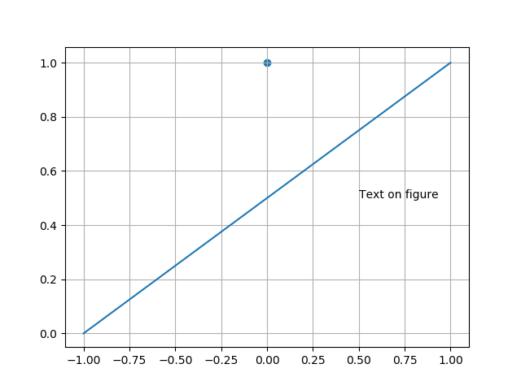
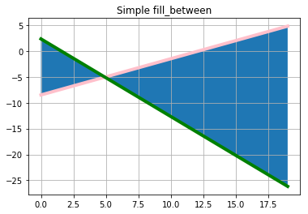

Методичка по Python
1. Операторы:
1.1 Арифметические операторы: +, -, *, /, //, %, **
В пояснении нужнаются пожалуй только операторы // и %
Целочисленное деление // - Деление в котором возвращается только целая часть результата.
Примеры:
12 // 5 в результате будет 2
4 // 3 в результате будет 1
Деление по модулю % - Делит левый операнд на правый и возвращает остаток.
Примеры:
7 % 2 в результате будет 1
13.2 % 5 в результате 3.2
1.2 Битовые операторы: &, |, ^, >>, <<, ~
Переменные типа int хранятся в двоичной системе счисления в виде последовательности бит. Биты нумеруются от 0, биты будем записывать справа налево (то есть бит с номером 0 будет записан самым правым, а самый старший бит — самым левым).
Для двух переменных одинакового скалярного типа определены битовые операции:
& битовое И (AND)
| битовое ИЛИ (OR)
^ битовое ИСКЛЮЧАЮЩЕЕ ИЛИ (XOR)
~ битовое ОТРИЦАНИЕ (NOT) — унарная операция.
Битовые операторы работают следующим образом. Берутся два операнда, и к каждой паре соответствующих бит для левого и правого операнда применяется данная операция, результатом будет переменная того же типа, каждый бит которой есть результат применения соответствующей логической операции к соответствующим битам двух операндов.
Рассмотрим примеры:
a = 5 #0b101
b = 6 #0b110
c = a & b #0b100 == 4
d = a | b #0b111 == 7
e = a ^ b #0b11 == 3
f = ~ a #0b1...11111010 == -6
Есть еще две операции, работающие с битами: это битовые сдвиги. Их два: сдвиг влево и вправо. Оператор a >> n возвращает число, которое получается из a сдвигом всех бит на n позиций вправо, при этом самые правые n бит отбрасываются.
Например:
a = 43 #0b101011
b = a >> 1 #0b10101 == 21
c = a >> 2 #0b1010 == 10
1.3 Операторы присваивания:
=, +=, -=, *=, /=, %=, //=, **=, &=, |=, ^=, >>=, <<=
1.4 Операторы сравнения: ==, !=, >, <, >=, <=
Результатом выполнения операторов сравнения являются значения: True и False.
1.5 Логические операторы: and, or, not
Логические операторы используются для объединения операторов сравнения, в операциях с логическим типом данных и в операторах ветвления.
and - Логический оператор "И". Условие будет истинным если оба операнда истина.
first_number > 0 and second_number < 20 #True если оба True
Примеры:
True and True равно True.
True and False равно False.
False and True равно False.
False and False равно False.
or - Логический оператор "ИЛИ". Если хотя бы один из операндов истинный, то и все выражение будет истинным.
first_number > 5 or second_number < 20 #True если хотябы один True
Примеры:
True or True равно True.
True or False равно True.
False or True равно True.
False or False равно False.
not - Логический оператор "НЕ". Изменяет логическое значение операнда на противоположное.
not first_number == second_number #True если было False
Примеры:
not True равно False.
not False равно True.
1.6 Операторы идентификации: is, is not
Операторы идентификации сравнивают ячейки памяти двух объектов.
is - Возвращает истину, если переменные по обе стороны от точки оператора указывают на тот же объект и ложь в противном случае.
is not - Возвращает ложным, если переменные по обе стороны от точки оператора указывают на тот же объект и верно в противном случае.
Примеры:
a = ["apple", "banana"]
b = ["apple", "banana"]
c = a
a is c # Вернёт True т.к. это один и тот же объект
a is b # Вернёт True т.к. это разные объекты
a == b # Вернёт True т.к. контект объектов одинаков
Последний пример показывает разницу между is и ==
1.7 Операторы членства: in, not in
Операторы идентификации сравнивают ячейки памяти двух объектов.
in - Истина, если он находит переменную в указанной последовательности и ложь в противном случае.
not in - Истина, если он не находит переменную в указанной последовательности и ложь в противном случае.
Примеры:
a = ["apple", "banana"]
"banana" in a #Выдаст True
"pineapple" not a #Выдаст True
3. Логические операторы:
3.1 Оператор ветвления: if
Оператор условного выбора ветви Python-программы. Его можно использовать для направления выполнения программы по двум различным ветвям. Чтобы написать несколько условий ветвления нужно использовать конструкцию elif, слово else используется если условие не подходит. Синтаксис:
number = 15
conclusion = ''
if number < 0:
conclusion = 'Number is less than zero'
elif number == 0:
conclusion = 'Number equals to zero'
elif number < 1:
conclusion = 'Number is greater than zero but less than one'
else:
conclusion = 'Number bigger than or equal to one'
3.2 Цикл for (и функция range()): for, range()
Оператор Python for перебирает элементы любой последовательности
(списка или строки) в том порядке, что они появляются в последовательности.
А функция, range(x,y,z) создаёт массив из чисел от x до y c шагом z
(если аргумент только 1 то от 0 до этого аргумента).
Например:
for number in range(5):
iterated_numbers.append(number)
assert iterated_numbers == [0, 1, 2, 3, 4]
3.3 Цикл while: while
Цикл while выполняется до тех пор, пока условие остается верным.
Например:
number = 2
power = 5
result = 1
while power > 0:
result *= number
power -= 1
3.4 Инструкция break: break
Оператор break, выходит из внутреннего цикла «for» или «while».
Пример:
number_to_be_found = 42
number_of_iterations = 0
for number in range(100):
if number == number_to_be_found:
# Выходим из цикла.
break
else:
number_of_iterations += 1
3.5 Оператор continue: continue
Оператор continue, прерывает настоящую итерацию
цикла и продолжает цикл со следующей итерации.
Пример:
for number in range(0, 10):
if number % 2 == 0:
even_numbers.append(number)
# Итерация препрывается и начинается новая
continue
rest_of_the_numbers.append(number)
4. Функции:
4.1 Инициализация функции: def
Ключевое слово def вводит определение функции. За ним должно следовать имя функции и заключенный в скобки список формальных параметров. Операторы, которые формируют тело функции, начинаются с следующей строки и должны быть с отступом. Слово return указывает на вывод.
def greet(name):
return 'Hello, ' + name
Можно вкладывать функции друг в друга:
def greet_again(name):
def get_message():
return 'Hello, '
result = get_message() + name
return result
Вызвать функцию можно по её имени:
greet_again('John') == 'Hello, John'
4.2 Область видимости переменных: global, nonlocal
У переменных в Python есть область видимости.
В зависимости от места в коде, где переменная была определена,
определяется и область видимости, то есть, где переменная будет доступна.
При использовании имен переменных в программе, Python каждый раз ищет,
создает или изменяет эти имена в соответствующем пространстве имен.
Пространство имен, которое доступно в каждый момент, зависит от области, в которой находится код.
У Python есть правило LEGB, которым он пользуется при поиске переменных.
- L (local) - в локальной (внутри функции).
- E (enclosing) - в локальной области объемлющих функций (это те функции, внутри которых находится наша функция).
- G (global) - в глобальной (в скрипте).
- B (built-in) - в встроенной (зарезервированные значения Python).
Оператор global объявляет переменную доступной для блока кода, следующим за оператором.
Её можно применять к переменным внутри функции.
def my_func(a, b):
global x
print(x)
x = 5
print(x)
x = 10
my_func(1, 2)
print(x) #10 5 5
С помощью nonlocal мы можем добавлять переопределение области во внутреннюю область.
def counter():
num = 0
def incrementer():
nonlocal num
num += 1
return num
return incrementer
4.3 Аргументы функции.
Можно указать значение аргументов функции по умолчанию.
Тогда функцию можно вызывать с меньшим количеством аргументов.
Пример:
def power_of(number, power=2):
return number ** power
power_of(3) == 9
Аргументы - ключевые слова используются при вызове функции. Благодаря ключевым аргументам, вы можете задавать произвольный (то есть не такой каким он описан, при создании функции) порядок аргументов.
def person(name, age):
print name, "is", age, "years old"
# Мы можем вызвать функцию вот так
person(age = 23, name = "John")
Функция также может принимать переменное количество позиционных аргументов, тогда перед именем ставится *:
def func(*args):
return args
func(1, 2, 3, 'abc') == (1, 2, 3, 'abc')
Как видно из примера, *args - это кортеж из всех переданных аргументов функции, и с переменной можно работать также, как и с кортежем.
Функция может принимать и произвольное число именованных аргументов, тогда перед именем ставится **:
def func(**kwargs):
return kwargs
func(a=1, b=2, c=3) == {'a': 1, 'c': 3, 'b': 2}
func() == {}
func(a='python') == {'a': 'python'}
В переменной **kwargs у нас хранится словарь, с которым мы, опять-таки, можем делать все, что нам заблагорассудится.
4.4 Анонимные (Лямбда) функции: lambda
Анонимные функции могут содержать лишь одно выражение, но и выполняются они быстрее. Анонимные функции создаются с помощью инструкции lambda. Кроме этого, их не обязательно присваивать переменной, как делали мы инструкцией def func():
func = lambda x, y: x + y
func(1, 2) == 3
func('a', 'b') == 'ab'
(lambda x, y: x + y)(1, 2) == 3
(lambda x, y: x + y)('a', 'b') == 'ab'
lambda функции, в отличие от обычной, не требуется инструкция return, а в остальном, ведет себя точно так же:
func = lambda *args: args
func(1, 2, 3, 4) == (1, 2, 3, 4)
4.5 Документация функций: """..."""
Документирование кода в python - достаточно важный аспект,
ведь от нее порой зависит читаемость и быстрота понимания вашего кода,
как другими людьми, так и вами через полгода. Чтобы задокументировать объект
нужно перед кодом этого объекта записать """ doc """. Тогда его можно получить с
помощью метода __doc__.
Например:
def do_nothing():
"""Do nothing, but document it.
No, really, it doesn't do anything.
"""
pass
do_nothing.__doc__
#"""Do nothing, but document it. No, really, it doesn't do anything."""
4.6 Декораторы.
Декоратор — это функция, которая позволяет обернуть другую функцию для расширения её функциональности без непосредственного изменения её кода. Вот почему декораторы можно рассматривать как практику метапрограммирования, когда программы могут работать с другими программами как со своими данными.
Тот факт, что всё является объектами, открывает перед нами множество возможностей. Мы можем сохранять функции в переменные, передавать их в качестве аргументов и возвращать из других функций. Можно даже определить одну функцию внутри другой. Иными словами, функции — это объекты первого класса. Мы знаем и о функциях высших порядков в математике это, например, производная d/dx, которая принимает в себя функцию и возвращает функцию.
Посмотрим на пример декоратора:
def decorator_function(func):
def wrapper():
print('Функция-обёртка!')
print('Оборачиваемая функция: {}'.format(func))
print('Выполняем обёрнутую функцию...')
func()
print('Выходим из обёртки')
return wrapper
Теперь посмотрим на декоратор в действии:
@decorator_function
def hello_world():
print('Hello world!')
hello_world()
#Оборачиваемая функция:
#Выполняем обёрнутую функцию...
#Hello world!
#Выходим из обёртки
Просто добавив @decorator_function перед определением
функции hello_world(), мы модифицировали её поведение.
Выражение с @ является всего лишь синтаксическим сахаром для
hello_world = decorator_function(hello_world).
Иными словами, выражение @decorator_function вызывает
decorator_function() с hello_world
в качестве аргумента и присваивает имени hello_world
возвращаемую функцию.
Ещё примеры:
def benchmark(func):
import time
def wrapper():
start = time.time()
func()
end = time.time()
print('[*] Время выполнения: {} секунд.'.format(end-start))
return wrapper
@benchmark
def fetch_webpage():
import requests
webpage = requests.get('https://google.com')
fetch_webpage()
Здесь мы создаём декоратор, замеряющий время выполнения функции. Далее мы используем его на функции, которая делает GET-запрос к главной странице Google. Чтобы измерить скорость, мы сначала сохраняем время перед выполнением обёрнутой функции, выполняем её, снова сохраняем текущее время и вычитаем из него начальное.
4.7 Оператор "пропуск": pass
Оператор pass ничего не делает. Он может использоваться, когда оператор требуется синтаксически, но программа не требует никаких действий (Аналог return, только ничего не делает).
4.8 Генераторы: yield
Генератор - это функция, возвращающая подвид итератора,
генерирующий значения.
Итератор генератора — это объект, порождаемый функцией-генератором.
Выглядят функции-генераторы также как и обычные, но содержат
выражения с ключевым словом yield для последовательного
генерирования значений,
которые могут быть использованы в циклах for in, либо их получения при помощи
функции next().
На каждой yield работа функции временно приостанавливается, при этом
сохраняется состояние исполнения, включая локальные переменные,
указатель на текущую инструкцию, внутренний стек и состояние обработки исключения.
При последующем обращении к итератору генератора (при вызовах его методов) функция
продолжает своё исполнение с места, на котором была приостановлена.
Этим функции-генераторы отличаются от обычных функций, при вызове которых
исполнение всякий раз начинается с начала.
Если функция достигает инструкции return, либо конца
(без указания упомянутой инструкции), возбуждается исключение
StopIteration и
итератор исчерпывает себя.
def my_animal_generator():
yield 'корова'
for animal in ['кот', 'собака', 'медведь']:
yield animal
yield 'кит'
for animal in my_animal_generator():
print(animal)
# корова кот собака медведь кит
7. Ошибки и исключения:
7.1 Оператор try: try, except, else, finally
Оператор try используется для обработки исключений.
Когда возникает ошибка или исключение, как мы ее называем,
Python обычно останавливается и генерирует сообщение-ошибку.
Эти исключения могут быть обработаны с помощью оператора try.
Блок try позволяет проверить блок кода на наличие ошибок.
Блок except позволяет вам обработать ошибку.
Блок else позволяет выполнить код, если ошибок не было.
Блок finally позволяет выполнять код независимо от результата блоков try и except.
Например:
message = ''
try:
print(not_existing_variable) # noqa: F821
except NameError:
message += 'Something went wrong.'
finally:
message += 'The "try except" is finished.'
7.2 Создание исключений: raise
Оператор raise позволяет программисту принудительно вызвать указанное исключение. Например, мы можем вызвать исключение NameError и отловить его в try:
try:
raise NameError('HiThere')
except NameError:
exception_is_caught = True
assert exception_is_caught
Мы можем создавать собственные исключения с помощью классов:
class MyCustomError(Exception):
"""Example of MyCustomError exception."""
def __init__(self, message):
super().__init__(message)
self.message = message
custom_exception_is_caught = False
try:
raise MyCustomError('My custom message')
except MyCustomError:
custom_exception_is_caught = True
9. Стандартные библиотеки для работы с математикой:
9.1 Библиотека Math.
Модуль math – один из наиважнейших в Python.
Этот модуль предоставляет обширный функционал для работы с числами.
import math
- math.ceil(X) – округление до ближайшего большего числа.
- math.copysign(X, Y) - возвращает число, имеющее модуль такой же, как и у числа X, а знак - как у числа Y.
- math.fabs(X) - модуль X.
- math.factorial(X) - факториал числа X.
- math.floor(X) - округление вниз.
- math.fmod(X, Y) - остаток от деления X на Y.
- math.frexp(X) - возвращает мантиссу и экспоненту числа.
- math.ldexp(X, i) - X * 2i. Функция, обратная функции math.frexp().
- math.fsum(последовательность) - сумма всех членов последовательности. Эквивалент встроенной функции sum(), но math.fsum() более точна для чисел с плавающей точкой.
- math.isfinite(X) - является ли X числом.
- math.isinf(X) - является ли X бесконечностью.
- math.isnan(X) - является ли X NaN (Not a Number - не число).
- math.modf(X) - возвращает дробную и целую часть числа X. Оба числа имеют тот же знак, что и X.
- math.trunc(X) - усекает значение X до целого.
- math.exp(X) - eX.
- math.expm1(X) - eX - 1. При X → 0 точнее, чем math.exp(X)-1.
- math.log(X, [base]) - логарифм X по основанию base. Если base не указан, вычисляется натуральный логарифм.
- math.log1p(X) - натуральный логарифм (1 + X). При X → 0 точнее, чем math.log(1+X)
- math.log10(X) - логарифм X по основанию 10.
- math.log2(X) - логарифм X по основанию 2.
- math.pow(X, Y) - XY.
- math.sqrt(X) - квадратный корень из X.
- math.acos(X) - арккосинус X. В радианах.
- math.asin(X) - арксинус X. В радианах.
- math.atan(X) - арктангенс X. В радианах.
- math.atan2(Y, X) - арктангенс Y/X. В радианах. С учетом четверти, в которой находится точка (X, Y).
- math.cos(X) - косинус X (X указывается в радианах).
- math.sin(X) - синус X (X указывается в радианах).
- math.tan(X) - тангенс X (X указывается в радианах).
- math.hypot(X, Y) - вычисляет гипотенузу треугольника с катетами X и Y (math.sqrt(x * x + y * y))
- math.degrees(X) - конвертирует радианы в градусы.
- math.radians(X) - конвертирует градусы в радианы.
- math.cosh(X) - вычисляет гиперболический косинус.
- math.sinh(X) - вычисляет гиперболический синус.
- math.tanh(X) - вычисляет гиперболический тангенс.
- math.acosh(X) - вычисляет обратный гиперболический косинус.
- math.asinh(X) - вычисляет обратный гиперболический синус.
- math.atanh(X) - вычисляет обратный гиперболический тангенс.
- math.erf(X) - функция ошибок.
- math.erfc(X) - дополнительная функция ошибок (1 - math.erf(X)).
- math.gamma(X) - гамма-функция X.
- math.lgamma(X) - натуральный логарифм гамма-функции X.
- math.pi - pi = 3,1415926...
- math.e - e = 2,718281...
9.2 Библиотека random.
Модуль random позволяет генерировать случайные числа.
Python порождает случайные числа на основе формулы, так что они не на самом деле случайные,
а, как говорят, псевдослучайные. Этот способ удобен для большинства приложений
(кроме онлайновых казино).
import random
- random.random() — возвращает псевдослучайное число от 0.0 до 1.0
-
random.seed(<Параметр>) — настраивает генератор
случайных чисел на новую последовательность.
По умолчанию используется системное время.
Если значение параметра будет одиноким, то генерируется одинокое число:
random.seed(20)
random.random()
0.9056396761745207
random.random()
0.6862541570267026
random.seed(20)
random.random()
0.9056396761745207
random.random()
0.7665092563626442 - random.uniform(<Начало>, <Конец>) — возвращает псевдослучайное вещественное число в диапазоне от <Начало> до <Конец>.
- random.randint(<Начало>, <Конец>) — возвращает псевдослучайное целое число в диапазоне от <Начало> до <Конец>.
-
random.choince(<Последовательность>) — возвращает
случайный элемент из любой последовательности (строки, списка, кортежа):
random.choice('Chewbacca') #'h'
random.choice([1,2,'a','b']) #2 - random.randrange(<Начало>, <Конец>, <Шаг>) — возвращает случайно выбранное число из последовательности.
- random.shuffle(<Список>) — перемешивает последовательность (изменяется сама последовательность). Поэтому функция не работает для неизменяемых объектов.
Вероятностные распределения
- random.triangular(low, high, mode) — случайное число с плавающей точкой, low ≤ N ≤ high. Mode - распределение.
- random.betavariate(alpha, beta) — бета-распределение. alpha>0, beta>0. Возвращает от 0 до 1.
- random.expovariate(lambd) — экспоненциальное распределение. lambd равен 1/среднее желаемое. Lambd должен быть отличным от нуля. Возвращаемые значения от 0 до плюс бесконечности, если lambd положительно, и от минус бесконечности до 0, если lambd отрицательный.
- random.gammavariate(alpha, beta) — гамма-распределение. Условия на параметры alpha>0 и beta>0.
- random.gauss(значение, стандартное отклонение) — распределение Гаусса.
- random.lognormvariate(mu, sigma) — логарифм нормального распределения. Если взять натуральный логарифм этого распределения, то вы получите нормальное распределение со средним mu и стандартным отклонением sigma. mu может иметь любое значение, и sigma должна быть больше нуля.
- random.normalvariate(mu, sigma) — нормальное распределение. mu — среднее значение, sigma — стандартное отклонение.
- random.vonmisesvariate(mu, kappa) — mu — средний угол, выраженный в радианах от 0 до 2π, и kappa — параметр концентрации, который должен быть больше или равен нулю. Если каппа равна нулю, это распределение сводится к случайному углу в диапазоне от 0 до 2π.
- random.paretovariate(alpha) — распределение Парето.
- random.weibullvariate(alpha, beta) — распределение Вейбулла.
9.3 Модуль statistics.
Этот модуль предоставляет функции для расчета математической статистики числовых данных.
import statistics
-
Средние показатели:
- statistics.mean() - Среднее арифметическое.
-
statistics.harmonic_mean() - Гармоническое среднее.

- statistics.median() - Медиана.
- statistics.median_low() - Нижняя медиана.
- statistics.median_high() - Верхняя медиана.
- statistics.mode() - Наиболее распространенное значение дискретных данных.
Эти функции рассчитывают среднее или типичное значение из совокупности или выборки.
Меры распространения
Эти функции вычисляют меру того, насколько популяция или выборка имеют тенденцию
отклоняться от типичных или средних значений.
- statistics.pstdev() - Популяционное стандартное отклонение данных.
- statistics.pvariance() - Популяционная дисперсия данных.
- statistics.stdev() - Стандартное отклонение выборки (квадратный корень дисперсии выборки).
- statistics.variance() - Дисперсии данных.
11. Библиотека glob:
Модуль glob предоставляет функцию для создания списков файлов из
поиска по шаблону в каталоге. glob находит все пути, совпадающие с заданным
шаблоном в соответствии с правилами, используемыми оболочкой Unix.
Обрабатываются символы "*" (произвольное количество символов), "?" (один символ),
и диапазоны символов с помощью []. Для использования тильды "~"
и переменных окружения необходимо использовать os.path.expanduser() и os.path.expandvars().
Для поиска спецсимволов, заключайте их в квадратные скобки.
Например, [?] соответствует символу "?".
import glob
- glob.glob(pathname) - возвращает список (возможно, пустой) путей, соответствующих шаблону pathname. Путь может быть как абсолютным (например, /usr/src/Python-1.5/Makefile) или относительный (как ../../Tools/*/*.gif).
- glob.iglob(pathname) - возвращает итератор, дающий те же значения, что и glob.glob.
- glob.escape(pathname) - экранирует все специальные символы для glob ("?", "*" и "["). Специальные символы в имени диска не экранируются (так как они там не учитываются), то есть в Windows escape("//?/c:/Quo vadis?.txt") возвращает "//?/c:/Quo vadis[?].txt".
Примеры:
glob.glob('./[0-9].*')
# ['./1.gif', './2.txt']
glob.glob('*.gif')
# ['1.gif', 'card.gif']
glob.glob('?.gif')
# ['1.gif']
12. Регулярные выражения:
12.1 Библиотека Re.
Регулярное выражение — это последовательность символов,
используемая для поиска и замены текста в строке или файле.
Регулярные выражения используют два типа символов:
- Специальные символы: как следует из названия, у этих символов есть специальные значения. Аналогично символу *, который как правило означает «любой символ» (но в регулярных выражениях работает немного иначе, о чем поговорим ниже);
- Литералы (например: a, b, 1, 2 и т. д.);
В Python для работы с регулярными выражениями есть модуль re.
import re
-
re.match(pattern, string) -
Этот метод ищет по заданному шаблону в начале строки.
Например, если мы вызовем метод match() на строке «AV Analytics AV» с шаблоном
«AV», то он завершится успешно. Однако если мы будем искать «Analytics»,
то результат будет отрицательный.
Чтобы вывести ее содержимое, используем метод group().
(Мы используем «r» перед строкой шаблона, чтобы показать, что это «сырая» строка в Python).
Пример:result = re.match(r'AV', 'AV Analytics Vidhya AV')
print result #<_sre.SRE_Match object at 0x0000000009BE4370>
print result.group(0) #AV
result = re.match(r'Analytics', 'AV Analytics Vidhya AV')
print result #NoneТакже есть методы start() и end() для того, чтобы узнать начальную и конечную позицию найденной строки.
result = re.match(r'AV', 'AV Analytics Vidhya AV')
print result.start() #0
print result.end() #2 - re.search(pattern, string) - Метод search() ищет по всей строке, но возвращает только первое найденное совпадение.
-
re.findall(pattern, string) -
Этот метод возвращает список всех найденных совпадений.
У метода findall() нет ограничений на поиск в начале или конце строки.
Пример:result = re.findall(r'AV', 'AV Analytics Vidhya AV')
print result #['AV', 'AV'] -
re.split(pattern, string, [maxsplit=0]) -
Этот метод разделяет строку по заданному шаблону.
Пример:result = re.split(r'y', 'Analytics')
print result #['Anal', 'tics']Метод split() принимает также аргумент maxsplit со значением по умолчанию, равным 0. В данном случае он разделит строку столько раз, сколько возможно, но если указать этот аргумент, то разделение будет произведено не более указанного количества раз.
-
re.sub(pattern, repl, string) -
Этот метод ищет шаблон в строке и заменяет его на указанную подстроку.
Если шаблон не найден, строка остается неизменной.
Пример:result = re.sub(r'India', 'the World',
'AV is largest Analytics community of India')
print result #'AV is largest Analytics community of the World' -
re.compile(pattern, repl, string) -
Мы можем собрать регулярное выражение в отдельный объект, который может быть
использован для поиска. Это также избавляет от переписывания одного и того
же выражения.
Пример:pattern = re.compile('AV')
result = pattern.findall('AV Analytics Vidhya AV')
print result #['AV', 'AV']
result2 = pattern.findall('AV is largest analytics community of India')
print result2 #['AV']
Специальные символы:
- . - Один любой символ, кроме новой строки \n.
- ? - 0 или 1 вхождение шаблона слева.
- + - 1 и более вхождений шаблона слева.
- * - 0 и более вхождений шаблона слева.
- \w - Любая цифра или буква (\W — все, кроме буквы или цифры).
- \d - Любая цифра [0-9] (\D — все, кроме цифры).
- \s - Любой пробельный символ (\S — любой непробельный символ).
- \b - Граница слова.
- [..] - Один из символов в скобках ([^..] — любой символ, кроме тех, что в скобках).
- \ - Экранирование специальных символов (\. означает точку или \+ — знак «плюс»).
- ^ и $ - Начало и конец строки соответственно.
- {n,m} - От n до m вхождений ({,m} — от 0 до m).
- a|b - Соответствует a или b.
- () - Группирует выражение и возвращает найденный текст.
- \t,\n,\r - Символ табуляции, новой строки и возврата каретки соответственно.
14. NumPy:
NumPy — это библиотека языка Python, добавляющая поддержку больших многомерных массивов и матриц,
вместе с большой библиотекой высокоуровневых (и очень быстрых) математических функций для операций
с этими массивами.
import numpy as np
14.1 Массивы и работа с ними:array.
Главной особенностью numpy является объект array. Массивы схожи со списками в python,
исключая тот факт, что элементы массива должны иметь одинаковый тип данных, как float и int.
Создание массива из списка:
a = np.array([1, 4, 5, 8], float)
Массивы могут быть и многомерными:
a = np.array([[1, 2, 3], [4, 5, 6]], float)
Ко всем элементам можно получить доступ и манипулировать ими также, как вы бы это делали с обычными списками:
a = np.array([1, 4, 5, 8], float)
a[:2] #array([ 1., 4.])
a[3] #8.0
a[0] = 5 #array([ 5., 4., 5., 8.])
Array slicing работает с многомерными массивами аналогично, как и с одномерными, применяя каждый срез, как фильтр для установленного измерения. Используйте ":" в измерении для указывания использования всех элементов этого измерения:
a = np.array([[1, 2, 3], [4, 5, 6]], float)
a[1,:] #array([ 4., 5., 6.])
a[:,2] #array([ 3., 6.])
a[-1:, -2:] #array([[ 5., 6.]])
-
Метод .shape возвращает количество строк и столбцов в матрице:
[[1,2,3],[4,5,6]].shape #(2,3) -
Метод .dtype возвращает тип переменных, хранящихся в массиве:
[[1,2,3],[4,5,6]].dtype #dtype('int32') -
Функция len() возвращает длину первого измерения (оси):
len(np.array([[1, 2, 3], [4, 5, 6]], float)) #2 -
Конструкция in используется для проверки на наличие элемента в массиве:
2 in np.array([[1, 2, 3], [4, 5, 6]], float) #True -
Метод .reshape() переформировывает массив в новую размерность.
метод reshape создает новый массив, а не модифицирует оригинальный:
a = np.array(range(10), float)
a = a.reshape((5, 2))
array([[ 0., 1.],
[ 2., 3.],
[ 4., 5.],
[ 6., 7.],
[ 8., 9.]]) -
Метод .copy() используется для создания копии существующего массива
в памяти:
a = np.array([1, 2, 3], float)
c = a.copy() #array([1., 2., 3.]) -
С помощью метода .tolist() списки можно тоже создавать с массивов:
a = np.array([1, 2, 3], float)
a.tolist() -
Метод .tostring() переконвертирует массив в бинарную строку, а метод
np.fromstring() преобразует бинарную строку обратно в массив:
a = array([1, 2, 3], float)
s = a.tostring()
#'\x00\x00\x00\x00\x00\x00\xf0?\x00\x00\x00\x00
# \x00\x00\x00@\x00\x00\x00\x00\x00\x00\x08@'
np.fromstring(s) #array([ 1., 2., 3.]) -
С помощью метода .fill() можно заполнить массив конкретными значемниями:
a = array([1, 2, 3], float)
a.fill(0) #array([ 0., 0., 0.]) -
Транспонирование массивов производится методом .transpose(), при этом
создается новый массив:
a = np.array(range(6), float).reshape((2, 3))
#array([[ 0., 1., 2.],
# [ 3., 4., 5.]])
a.transpose()
#array([[ 0., 3.],
# [ 1., 4.],
# [ 2., 5.]]) -
Многомерный массив можно переконвертировать в одномерный при помощи метода .flatten():
a = np.array([[1, 2, 3], [4, 5, 6]], float)
a.flatten() #array([ 1., 2., 3., 4., 5., 6.]) -
Два или больше массивов можно сконкатенировать при помощи метода .concatenate():
a = np.array([1,2], float)
Если массив не одномерный, можно задать ось, по которой будет происходить соединение. По умолчанию (не задавая значения оси), соединение будет происходить по первому измерению:
b = np.array([3,4,5,6], float)
c = np.array([7,8,9], float)
np.concatenate((a, b, c))
#array([1., 2., 3., 4., 5., 6., 7., 8., 9.])a = np.array([[1, 2], [3, 4]], float)
b = np.array([[5, 6], [7,8]], float)
np.concatenate((a,b))
#array([[ 1., 2.],
# [ 3., 4.],
# [ 5., 6.],
# [ 7., 8.]])
np.concatenate((a,b), axis=0)
#array([[ 1., 2.],
# [ 3., 4.],
# [ 5., 6.],
# [ 7., 8.]])
np.concatenate((a,b), axis=1)
#array([[ 1., 2., 5., 6.],
# [ 3., 4., 7., 8.]]) -
Размерность массива может быть увеличена при использовании константы np.newaxis в квадратных скобках:
a = np.array([1, 2, 3], float)
a[:,np.newaxis]
#array([[ 1.],
# [ 2.],
# [ 3.]])
a[np.newaxis,:]
#array([[ 1., 2., 3.]])
14.2 Другие пути создания массивов.
-
Функция np.arange() аналогична функции range, но возвращает массив:
np.arange(1, 6, 2, dtype=int) #array([1, 3, 5]) -
Функции np.zeros() и np.ones()
создают новые массивы с
установленной размерностью, заполненные нулями и единицами:
np.ones((2,3), dtype=float)
#array([[ 1., 1., 1.],
# [ 1., 1., 1.]])
np.zeros(7, dtype=int)
#array([0, 0, 0, 0, 0, 0, 0]) -
Функции np.zeros_like() и np.ones_like()
могут преобразовать уже созданный массив,
заполнив его нулями и единицами соответственно:
a = np.array([[1, 2, 3], [4, 5, 6]], float)
np.zeros_like(a)
#array([[ 0., 0., 0.],
# [ 0., 0., 0.]])
np.ones_like(a)
#array([[ 1., 1., 1.],
# [ 1., 1., 1.]]) -
Для создания квадратной матрицы с главной диагональю,
которая заполненная единицами, воспользуемся методом
np.identity():
np.identity(4, dtype=float)
#array([[ 1., 0., 0., 0.],
# [ 0., 1., 0., 0.],
# [ 0., 0., 1., 0.],
# [ 0., 0., 0., 1.]]) -
Функция np.eye() возвращает матрицу с единичками
на к-атой диагонали:
np.eye(4, k=1, dtype=float)
#array([[ 0., 1., 0., 0.],
# [ 0., 0., 1., 0.],
# [ 0., 0., 0., 1.],
# [ 0., 0., 0., 0.]])
14.3 Математические операции над массивами:
Когда для массивов мы используем стандартные математические операции, должен соблюдаться принцип: элемент-элемент. Это означает, что массивы должны быть одинакового размера во время сложения, вычитания и тому подобных операций:
a = np.array([1,2,3], float)
b = np.array([5,2,6], float)
a + b #array([6., 4., 9.])
a – b #array([-4., 0., -3.])
a * b #array([5., 4., 18.])
b / a #array([5., 1., 2.])
a % b #array([1., 0., 3.])
b**a #array([5., 4., 216.])
Если размерность массивов не совпадает, они будут преобразованы для выполнения математических операций. Это зачастую означает, что меньший массив будет использован несколько раз для завершения операций:
a = np.array([[1, 2], [3, 4], [5, 6]], float)
b = np.array([-1, 3], float)
a + b
#array([[ 0., 5.],
# [ 2., 7.],
# [ 4., 9.]])
Тут, одномерный массив b был преобразован в двухмерный, который соответствует размеру массива a. По существу, b был повторен несколько раз, для каждой «строки» a.
14.4 Стандартные математические функции, которые могут быть применены поэлементно к массивам.
- np.abs() - Функция модуля применяемый поэлементно к массиву.
- np.sign() - Возвращающает знак каждого элемента массива.
- np.sqrt() - Возвращает квадратный корень каждого элемента массива.
- np.log() - Возвращает натуральный логарифм каждого элемента массива.
- np.log10() - Возвращает десятичный логарифм каждого элемента массива.
- np.exp() - Возвращает экспоненту в степени каждого элемента массива.
- np.sin() - Возвращает синус каждого элемента массива.
- np.cos() - Возвращает косинус каждого элемента массива.
- np.tan() - возвращает тангенс каждого элемента массива.
- np.arcsin() - Возвращает арксинус каждого элемента.
- np.arccos() - Возвращает арккосинус каждого элемента.
- np.arctan() - Возвращает арктангенс каждого элемента.
- np.sinh() - Возвращает гиперболический синус каждого элемента.
- np.cosh() - Возвращает гиперболический косинус каждого элемента.
- np.tanh() - Возвращает гиперболический тангенс каждого элемента.
- np.arcsinh() - Возвращает гиперболический арксинус каждого элемента.
- np.arccosh() - Возвращает гиперболический арккосинус каждого элемента.
- np.arctanh() - Возвращает гиперболический арктангенс каждого элемента
-
Функции np.floor(), np.ceil()
и np.rint() возвращают нижние,
верхние или ближайшие (округлённое) значение:
a = np.array([1.1, 1.5, 1.9], float)
np.floor(a) #array([ 1., 1., 1.])
np.ceil(a) #array([ 2., 2., 2.])
np.rint(a) #array([ 1., 2., 2.]) - np.pi и np.e - числа Пи и Эйлера.
a = np.array([1, 4, 9], float)
np.sqrt(a) #array([ 1., 2., 3.])
14.5 Перебор элементов массива.
Для многомерных массивов итерация будет проводиться по первой оси, так, что каждый проход цикла будет возвращать «строку» массива:
a = np.array([[1, 2], [3, 4], [5, 6]], float)
for x in a:
print x
#[ 1. 2.]
#[ 3. 4.]
#[ 5. 6.]
Множественное присваивание также доступно при итерации:
a = np.array([[1, 2], [3, 4], [5, 6]], float)
for (x, y) in a:
print x * y
#2.0
#12.0
#30.0
14.6 Базовые операции над массивами.
-
sorted() и .sort() - сортировка массивов:
a = np.array([6, 2, 5, -1, 0], float)
sorted(a) #[-1.0, 0.0, 2.0, 5.0, 6.0]
a.sort() #array([-1., 0., 2., 5., 6.]) -
.clip() - "сокращает" значения в массиве, чтобы они
попадали в заданный диапазон:
a = np.array([6, 2, 5, -1, 0], float)
a.clip(0, 5) #array([ 5., 2., 5., 0., 0.]) -
np.unique() - Извлекает уникальные элементы:
a = np.array([1, 1, 4, 5, 5, 5, 7], float)
np.unique(a) #array([ 1., 4., 5., 7.]) -
.diagonal() - диагональ для двухмерных массивов:
a = np.array([[1, 2], [3, 4]], float)
a.diagonal() #array([ 1., 4.])
14.7 Операторы сравнения и тестирование значений.
Булево сравнение может быть использовано для поэлементного сравнения массивов одинаковых длин. Возвращаемое значение это массив булевых True/False значений:
a = np.array([1, 3, 0], float)
b = np.array([0, 3, 2], float)
a > b #array([ True, False, False], dtype=bool)
a == b #array([False, True, False], dtype=bool)
a <= b #array([False, True, True], dtype=bool)
Результат сравнения может быть сохранен в массиве:
c = a > b
Массивы могут быть сравнены с одиночным значением:
np.array([1, 3, 0], float) > 2
-
Операторы any и all могут быть использованы для определения
истинны ли хотя бы один или все элементы соответственно:
c = np.array([ True, False, False], bool)
any(c) #True
all(c) #False -
Комбинированные булевы выражения могут быть применены к
массивам по принципу элемент — элемент используя специальные функции
np.logical_and(), np.logical_or()
и np.logical_not():
a = np.array([1, 3, 0], float)
np.logical_and(a > 0, a < 3)
#array([ True, False, False], dtype=bool)
b = np.array([True, False, True], bool)
np.logical_not(b) #array([False, True, False], dtype=bool)
c = np.array([False, True, False], bool)
np.logical_or(b, c) #array([ True, True, False], dtype=bool) -
Функция where() создает новый массив из двух других массивов одинаковых
длин используя булев фильтр для выбора межу двумя элементами.
Базовый синтаксис:
where(boolarray, truearray, falsearray):a = np.array([1, 3, 0], float)
np.where(a != 0, 1 / a, a)
#array([1., 0.33333333, 0.]) -
Функция .nonzero() возвращает кортеж индексов ненулевых значений:
a = np.array([[0, 1], [3, 0]], float)
a.nonzero() #(array([0, 1]), array([1, 0])) -
Также можно проверить значения на конечность np.isfinite()
и NaN(not a number) np.isnan():
a = np.array([1, np.NaN, np.Inf], float)
np.isnan(a) #array([False, True, False], dtype=bool)
np.isfinite(a) #array([ True, False, False], dtype=bool)
14.8 Выбор элементов массива и манипуляция с ними.
Мы уже видели, как и у списков, элементы массива можно получить используя операцию доступа по индексу. Однако, в отличии от списков, массивы также позволяют делать выбор элементов используя другие массивы. Это значит, что мы можем использовать массив для фильтрации специфических подмножеств элементов других массивов.
a = np.array([[6, 4], [5, 9]], float)
a >= 6
#array([[ True, False],
# [False, True]], dtype=bool)
a[a >= 6] #array([ 6., 9.])
Также мы можем записать массив для фильтрации в переменную:
sel = (a >= 6)
a[sel] #array([ 6., 9.])
Фильтрация может быть достигнута использованием булевых выражений:
a[np.logical_and(a > 5, a < 9)] #array([ 6.])
Можно использовать целочисленные массивы. В этом случае, целочисленный массив хранит индексы элементов, которые будут взяты из массива:
a = np.array([2, 4, 6, 8], float)
b = np.array([0, 0, 1, 3, 2, 1], int)
a[b] #array([ 2., 2., 4., 8., 6., 4.])
Для многомерных массивов, нам необходимо передать несколько одномерных целочисленных массивов в оператор доступа индексу для каждой оси. Потом каждый из массивов проходит такую последовательность: первый элемент соответствует индексу строки, который является первым элементом массива b, второй элемент соответствует индексу столбца, который является первым элементом массива c и так далее.
a = np.array([[1, 4], [9, 16]], float)
b = np.array([0, 0, 1, 1, 0], int)
c = np.array([0, 1, 1, 1, 1], int)
a[b,c] #array([ 1., 4., 16., 16., 4.])
-
Специальная функция .take() доступна для выполнения выборки с
целочисленными массивами. Это работает также как и использования
оператора взятия по индексу:
a = np.array([2, 4, 6, 8], float)
b = np.array([0, 0, 1, 3, 2, 1], int)
a.take(b) #array([ 2., 2., 4., 8., 6., 4.])Функция take также предоставляет аргумент axis (ось) для взятия подсекции многомерного массива вдоль какой-либо оси.
a = np.array([[0, 1], [2, 3]], float)
b = np.array([0, 0, 1], int)
a.take(b, axis=0)
#array([[ 0., 1.],
# [ 0., 1.],
# [ 2., 3.]])
a.take(b, axis=1)
#array([[ 0., 0., 1.],
# [ 2., 2., 3.]]) -
Функция .put(), будет брать значения из исходного массива и
записывать их на специфические индексы в другом put-массиве:
a = np.array([0, 1, 2, 3, 4, 5], float)
b = np.array([9, 8, 7], float)
a.put([0, 3], b) #array([ 9., 1., 2., 8., 4., 5.])
14.9 Векторная и матричная математика.
-
Функция np.dot() возвращает скалярное произведение векторов:
a = np.array([1, 2, 3], float)
b = np.array([0, 1, 1], float)
np.dot(a, b) #5.0Функция np.dot() также может умножать матрицы:
a = np.array([[0, 1], [2, 3]], float)
b = np.array([2, 3], float)
c = np.array([[1, 1], [4, 0]], float)
np.dot(b, a) #array([ 6., 11.])
np.dot(a, b) #array([ 3., 13.])
np.dot(a, c)
#array([[ 4., 0.],
# [ 14., 2.]])
np.dot(c, a)
#array([[ 2., 4.],
# [ 0., 4.]]) -
np.outer() - внешнее произведение векторов,
np.inner() - внутренее произведение векторов,
np.cross() - перекрёстное произведение векторов.
a = np.array([1, 4, 0], float)
b = np.array([2, 2, 1], float)
np.outer(a, b)
#array([[ 2., 2., 1.],
# [ 8., 8., 4.],
# [ 0., 0., 0.]])
np.inner(a, b) #10.0
np.cross(a, b) #array([ 4., -1., -6.])
NumPy также предоставляет набор встроенных функций и методов для работы с линейной алгеброй. Это всё можно найти в под-модуле linalg.
- np.linalg.matrix_power(M, n) - возводит матрицу M в степень n.
- np.linalg.cholesky(a) - разложение Холецкого.
- np.linalg.qr(a[, mode]) - QR разложение.
-
np.linalg.svd(a[, full_matrices, compute_uv]) - сингулярное разложение.
a = np.array([[1, 3,4], [5, 2, 3]], float)
U, s, Vh = np.linalg.svd(a)
U
#array([[-0.6113829 , -0.79133492],
# [-0.79133492, 0.6113829 ]])
s
#array([ 7.46791327, 2.86884495])
Vh
#array([[-0.61169129, -0.45753324, -0.64536587],
# [ 0.78971838, -0.40129005, -0.46401635],
# [-0.046676 , -0.79349205, 0.60678804]]) -
np.linalg.eig(a) - собственные значения и собственные векторы.
vals, vecs = np.linalg.eig(a)
vals
#array([ 9. , 2.44948974, -2.44948974])
vecs
#array([[-0.3538921 , -0.56786837, 0.27843404],
# [-0.88473024, 0.44024287, -0.89787873],
# [-0.30333608, 0.69549388, 0.34101066]]) - np.linalg.norm(x[, ord, axis]) - норма вектора или оператора.
- np.linalg.cond(x[, p]) - число обусловленности.
-
np.linalg.det(a) - определитель
a = np.array([[4, 2, 0], [9, 3, 7], [1, 2, 1]], float)
#array([[ 4., 2., 0.],
# [ 9., 3., 7.],
# [ 1., 2., 1.]])
np.linalg.det(a) #-53.99... - np.linalg.slogdet(a) - знак и логарифм определителя (для избежания переполнения, если сам определитель очень маленький).
-
np.linalg.solve(a, b) - решает систему линейных уравнений
Ax = b. -
np.linalg.tensorsolve(a, b[, axes]) - решает тензорную систему линейных уравнений
Ax = b. - np.linalg.lstsq(a, b[, rcond]) - метод наименьших квадратов.
-
np.linalg.inv(a) - обратная матрица.
b = np.linalg.inv(a)
b
#array([[ 0.14814815, 0.07407407, -0.25925926],
# [ 0.2037037 , -0.14814815, 0.51851852],
# [-0.27777778, 0.11111111, 0.11111111]])
np.dot(a, b)
#array([[ 1.00000000e+00, 5.55111512e-17, 2.22044605e-16],
# [ 0.00000000e+00, 1.00000000e+00, 5.55111512e-16],
# [ 1.11022302e-16, 0.00000000e+00, 1.00000000e+00]])
14.10 Математика многочленов.
NumPy предоставляет методы для работы с полиномами.
-
np.poly() - возвращает коэффициенты полинома, который подходит под
список передаваемых корней:
np.poly([-1, 1, 1, 10]) #array([ 1, -11, 9, 11, -10]) Здесь, массив возвращает коэффициенты соответствующие уравнению:
-
Функция np.root() вернет все корни многочлена
соответсвующего переданным коэффициентам:
np.roots([1, 4, -2, 3])
#array([-4.57974010+0.j, 0.28987005+0.75566815j,
0.28987005-0.75566815j]) -
np.polyint() - возвращает коэффициенты
проинтегрированного полинома с передаваемыми коэффициентами.
Например проинтегрированный полином имеет вид
имеет вид  ,
где
,
где  обычно равно нулю.
обычно равно нулю.
np.polyint([1, 1, 1, 1])
#array([ 0.25, 0.33333333, 0.5, 1., 0. ]) -
np.polyder() - производная аналогичная интегрированию:
np.polyder([1./4., 1./3., 1./2., 1., 0.])
#array([ 1., 1., 1., 1.]) - np.polyadd(), np.polysub(), np.polymul() и np.polydiv() - суммирование, вычитание, умножение и деление коэффициентов многочлена.
-
np.polyval() подставляет в многочлен заданное значение.
np.polyval([1, -2, 0, 2], 4) #34
-
np.polyfit() может быть использована для подбора (интерполяции) многочлена заданного
порядка к набору значений:
x = [1, 2, 3, 4, 5, 6, 7, 8]
Возвращаемый массив это список коэффициентов многочлена.
y = [0, 2, 1, 3, 7, 10, 11, 19]
np.polyfit(x, y, 2) #array([ 0.375, -0.88690476, 1.05357143])
14.11 Статистика.
-
Функции np.sum(), a.sum() и
np.prod(), a.prod() суммируют
и перемножают элементы:
a = np.array([2, 4, 3], float)
a.sum() #9.0
a.prod() #24.0
np.sum(a) #9.0
np.prod(a) #24.0 -
.mean() - среднее арифметическое, .var()
- вариация и .std() - девиация:
a = np.array([2, 1, 9], float)
a.mean() #4.0
a.var() #12.666666666666666
a.std() #3.5590260840104371 -
.min() - минимум и .max()
- максимум в массиве:
a = np.array([2, 1, 9], float)
a.min() #1.0
a.max() #9.0 -
Функции .argmin()
и .argmax() возвращают индекс минимального
или максимального элемента:
a = np.array([2, 1, 9], float)
a.argmin() #1
a.argmax() #2
Для многомерных массивов каждая из функций может принять дополнительный аргумент axis и в зависимости от его значения выполнять функции по определенной оси, помещая результаты исполнения в массив:
a = np.array([[0, 2], [3, -1], [3, 5]], float)
a.mean(axis=0) #array([ 2., 2.])
a.mean(axis=1) #array([ 1., 1., 4.])
a.min(axis=1) #array([ 0., -1., 3.])
a.max(axis=0) #array([ 3., 5.])
-
np.median() - медиана.
a = np.array([1, 4, 3, 8, 9, 2, 3], float)
np.median(a) #3.0 -
Коэффициент корреляции для некоторых переменных,
наблюдается несколько раз и может быть найден с помощью функции
np.corrcoef() из массивов вида:
[[x1, x2, ...], [y1, y2, ...], [z1, z2, ...], ...], где x, y, z это разные квантовые наблюдаемые и номера указывают количество «наблюдений»:a = np.array([[1, 2, 1, 3], [5, 3, 1, 8]], float)
Имеем возвращаемый массив c[i, j] который хранит корреляционный коэффициент для i-тых и j-тых квантовых наблюдаемых.
c = np.corrcoef(a)
#array([[ 1., 0.72870505],
# [ 0.72, 1. ]]) -
np.cov() - ковариационный момент может быть найден:
np.cov(a)
#array([[ 0.91666667, 2.08333333],
# [ 2.08333333, 8.91666667]])
14.12 Случайные числа.
Важная часть каждой симуляции это способность генерировать случайные числа.
Для этого мы используем встроенный в NumPy генератор псевдослучайных
чисел в под-модуле random. Числа являются псевдо случайными, в том
плане что, они сгенерированы детерминистически из порождающего элемента
(seed number), но рассредоточены в статистическом сходстве
с случайным образом.
Задать порождающий элемент последовательности случайных чисел можно так:
np.random.seed(293423)
Seed это целое число. Каждая программа которая запускается с
одинаковым seed`ом будет генерировать одинаковую последовательность чисел каждый раз.
-
np.random.rand() - Массив случайных чисел из полуинтервала [0.0, 1.0):
np.random.rand(5)
#array([ 0.40783762, 0.7550402, 0.00919317,
0.01713451, 0.95299583])
np.random.rand(2,3)
#array([[ 0.50431753, 0.48272463, 0.45811345],
# [ 0.18209476, 0.48631022, 0.49590404]])
np.random.random() #0.70110 -
np.random.randint(min, max) - генерация случайного
целочисленного числа в диапазоне [min, max):
np.random.randint(5, 10) #9 - np.random.poisson(a) - Генерация из дискретного распределения Пуассона при λ = a,
-
np.random.normal(a, b) - Генерация числа из нормального распределения
(Гаусса) при среднем значении μ = a и стандартной девиации σ = b.
np.random.normal(1.5, 4.0) #0.836
Для генерации нескольких значений используем аргумент size:np.random.normal(size=3)
#array([-1.67215088, 0.65813053, -0.70150614]) -
np.random.shuffle() - случайное распределение значений в списке:
l = range(10)
#[0, 1, 2, 3, 4, 5, 6, 7, 8, 9]
np.random.shuffle(l)
#[4, 9, 5, 0, 2, 7, 6, 8, 1, 3]
2. Типы данных:
2.1 Числа (включая booleans): int, bool, float, complex
В Python есть 3 числовых типа:
- int - Integer, целые числа.
- bool - Boolean, логический тип данных, принимает значения True или False, которые можно заменить на 1 и 0.
- float - числа с плавающей точкой, аналог вещественных чисел.
- complex - комплексные числа.
Примеры:
a=-177463 #int
q = True #bool
b=-35.59 #float
c=35e3 #== 35000 float
w_1=5+6j #complex
w_2=3-2j #complex
w_1*w_2==27+8j
2.2 Строки и их методы: '...', "..."
Помимо чисел, Python может манипулировать строками, которые могут быть определены несколькими способами. Они могут быть заключены в одинарные кавычки ('...') name_1 = 'John' или двойные кавычки ("...") name_2 = "John", разницы в этих 2-х определениях нет.
Символ \ экранирует кавычки, чтобы они тоже отображались в строке string_eg = 'doesn\'t'. А символ \n переносит строку на новую строчку.
Строки могут быть проиндексированы, причем первый символ имеет индекс 0.
Нет отдельного типа символов; символ - это просто строка.
Можно индексировать строку и с конца, но тогда начать нужно с -1.
В дополнение к индексации, поддерживаются срезы, позволяющие получить набор символов из начальной строки.
Примеры:
word = 'Python'
word[0] == 'P'
word[5] == 'n'
word[-1] == 'n'
word[-2] == 'o'
word[0:2] == 'Py' # это срез.
Строки так же можно складывать 'J'+'ython' == 'Jython' или умножать 3 * 'J' == 'JJJ'.
Методы для работы со строками:
-
Метод strip() удаляет все пробелы в начале и в конце строки.
strip(" Python ") == "Python" -
len() возвращает длину строки.
len("Python") == 6 -
Метод lower() возвращает строку в нижнем регистре.
"PyThon".lower() == 'python' -
Метод upper() возвращает строку в верхнем регистре.
"PyThon".upper() == 'PYTHON' -
Метод replace() заменяет строку другой строкой.
"Python".replace('P', 'J') == 'Jython' -
Метод split() разбивает строку на подстроки,
если он находит экземпляры разделителя. Если разделитель не указан,
то разбивает по символам.
"Hello, World".split(',') == ['Hello', ' World!']
"Python".split() == ['P', 'y', 't', 'h', 'o', 'n'] -
Метод capitalize() преобразует первый символ в верхний регистр.
'low letter at the beginning'.capitalize() == 'Low letter at the beginning' -
Метод count() возвращает количество раз, когда указанная строка встречается в начальной строке.
'low letter at the beginning'.count('t') == 4 -
Метод find() ищет в строке указанную подстроку и возвращает позицию, где она была найдена.
'Hello, welcome to my world'.find('welcome') == 7 -
Метод title() преобразует первый символ каждого слова
(наборы символов разделённые пробелом) в верхний регистр.
'Welcome to my world'.title() == 'Welcome To My World' -
Метод join() объединяет элементы кортежа (передаваемого аргументом),
разделяя их строкой к которой мы этот метот и применяем.
my_tuple = ('John', 'Peter', 'Vicky')
', '.join(my_tuple) == 'John, Peter, Vicky' -
Метод isalpha() возвращает True если все символы в строке являются буквами.
'CompanyX'.isalpha() == True
'Company33X'.isalpha() == False -
Метод isdecimal() возвращает True если все символы в строке являются цифрами.
'1234'.isdecimal() == True
'12fff34'.isdecimal() == False
В строки можно вставлять аргументы если перед строкой поставить f :
year = 2018
event = 'conference'
f'Results of the {year} {event}' == 'Results of the 2018 conference'
С помощью метода str() в струку можно преобразовывать другие типы данных: str(5) == '5' А метод repr() делает строки так как они записаны:
a = 10 * 3.25
b = 200 * 200
repr((a, b, ('spam', 'eggs'))) == "(32.5, 40000, ('spam', 'eggs'))"
2.3 Списки и их методы: [...]
Python знает несколько составных типов данных, используемых для группировки. Наиболее универсальным является список, который определяется как набор элементов, разделенных запятыми, в квадратных скобках squares = [1, 4, 9, 16, 25]. Список может содержать элементы разных типов, но обычно все эти элементы имеют один и тот же тип данных.
Списки так же как и строки индексируются и срезаются:
squares = [1, 4, 9, 16, 25]
squares[0] == 1
squares[-3:] == [9, 16, 25]
Списки также поддерживают такие операции, как конкатенация (сложение, склейка)
[1, 4, 9] + [36, 49, 64] == [1, 4, 9, 36, 49, 64]
Списки в отличии от строк являются изменяемыми:
cubes = [1, 8, 27, 65, 125]
cubes[3] = 64 #== [1, 8, 27, 64, 125]
cubes[1:2] = [1, 2] #== [1, 1, 1, 64, 125]
С помощью метода append() можно добавить элемент в конец списка [1, 8, 27, 64, 125].append(7 ** 3) == [1, 8, 27, 64, 125, 343]. Можно создавать вложенные (многомерные списки) mixed_list == [['a', 'b', 'c'], [1, 2, 3]]. Так же можно очистить список с помощью среза
letters = ['a', 'b', 'f', 'g']
letters[:] = [] # == []
Методы для работы со списками:
-
Функция len() возвращает длину списка:
len(['a', 'b', 'c', 'd']) == 4 -
Метод remove(x) удаляет первый элемент со значением x:
['orange', 'apple', 'pear'].remove('apple') == ['orange', 'pear'] -
Метод insert(i, x) вставляет элемент x на позицию i:
['apple, 'orange'].insert(0, 'grape') == ['grape', 'apple, 'orange'] -
Метод index(x, start, end) возвращает позицию первого
вхождения элемента x начиная со start до end (не обязательные аргументы)
[1,3,8,3,7].index(3, 2) == 3
[1,3,8,3,7].index(3) == 1 -
Метод count(x) возвращает количество вхождений элемента x:
[3,5,7,2,4,3].count(3) == 2 -
Метод copy() возвращает копию списка:
a = [3,6,3,3].copy() #a == [3,6,3,3] -
Метод reverse() возвращает "перевёрнутый" список:
[1,2,4,5].reverse() == [5,4,2,1] -
Метод sort(key=None, reverse=False) сортирует список
(если нужно сортировать не цифры, то лучше прочитать подробнее)
[2,4,73,1,4,3].sort() == [1,2,3,4,4,73] -
Метод pop() удаляет последний элемент списка и возвращает его
fruits == ['banana', 'kiwi', 'apple', 'banana']
fruits.pop() == 'banana'
fruits == ['banana', 'kiwi', 'apple'] -
Метод clear() удаляет список:
fruits.clear() == [] -
Приписка del позволяет удалить элемент по его индексу:
numbers = [-1, 1, 66.25, 333, 333, 1234.5]
del numbers[0]
numbers == [1, 66.25, 333, 333, 1234.5]
Можно автоматизировать создание списков, например с помощью цикла:
squares = []
for number in range(10):
squares.append(number ** 2)
assert squares == [0, 1, 4, 9, 16, 25, 36, 49, 64, 81]
С помощью лямбда функции:
squares = list(map(lambda x: x ** 2, range(10)))
Или с помощью конструктора списков:
combinations = [(x, y) for x in [1, 2, 3] for y in [3, 1, 4] if x != y]
Так же можно применять функции в элементам списка:
abs_vector = [abs(x) for x in vector] #Применяем модуль ко всем элементам списка vector
2.4 Кортежи: (...)
Кортеж - это коллекция, которая упорядочена и неизменна. В Python кортежи пишутся с круглые скобки.
Кортежи индексируются:
fruits_tuple = ("apple", "banana", "cherry")
fruits_tuple[1] == "banana"
Кортежи могут быть вложенными или пустыми:
nested_tuple == ((12345, 54321, 'hello!'), (1, 2, 3, 4, 5))
tuple == ()
Фунция len() возвращает длинну массива:
len(("apple")) == 1
2.5 Наборы и их методы: {...}
Набор - это неупорядоченная и неиндексированная коллекция (Аналог множеств).
В Python наборы пишутся с помощью фигурных скобок. Наборы также поддерживают
математические операции, такие как объединение, пересечение, разность и
симметричная разница.
fruits_set = {"apple", "banana", "cherry"}
Методы для работы с наборами:
-
С помощью конструкции in можно узнать есть ли указанный элемент в наборе:
"apple" in {"apple", "banana", "cherry"} == True -
С помощью функции len() можно узнать длинну набора:
len({"apple", "banana", "cherry"}) == 3 -
С помощью метода add() можно добавить элемент в конец набора:
{"apple", "banana", "cherry"}.add("pineapple") == {"apple", "banana", "cherry", "pineapple"} -
Метод remove(x) позволяет удали элемент x:
{"apple", "banana", "cherry"}.remove("apple") == {"banana", "cherry"} -
С помощью метода set() мы можем разбить другой объект в набор,
заметим что элементы в наборе не повторяются:
set('abracadabra') == {'a', 'r', 'b', 'c', 'd'} -
Мы можем найти разность наборов (удаляет повторяющиеся элементы):
{'a', 'r', 'b', 'c', 'd'} - {'a', 'l', 'c', 'z', 'm'} == {'r', 'b', 'd'} -
Операция объединения (|):
{'a', 'r', 'b', 'c', 'd'} | {'a', 'l', 'c', 'z', 'm'} == {'a', 'c', 'r', 'd', 'b', 'm', 'z', 'l'} -
Операция пересечения (&):
{'a', 'r', 'b', 'c', 'd'} & {'a', 'l', 'c', 'z', 'm'} == {'a', 'c'} -
Операция симметричной разности (^):
{'a', 'r', 'b', 'c', 'd'} ^ {'a', 'l', 'c', 'z', 'm'} == {'r', 'd', 'b', 'm', 'z', 'l'}
2.6 Словари: { key:values }
Словарь - это неупорядоченная, изменяемая и индексируемая коллекция. В Python словари есть написано в фигурных скобках, и они имеют ключи и значения.
fruits_dictionary = {
'cherry': 'red',
'apple': 'green',
'banana': 'yellow',
}
Что можно делать со словарями?
-
Можно искать значение по ключу:
fruits_dictionary['apple'] == 'green' -
Чтобы проверить, есть ли один ключ в словаре,
используйте ключевое слово in.
'apple' in fruits_dictionary == True -
Можно изменить значение в ключе:
fruits_dictionary['apple'] = 'red' -
Можно добавить новый ключ со значением:
fruits_dictionary['pineapple'] = 'yellow' -
Функция list() возвращает множество ключей словаря:
list(fruits_dictionary) == ['cherry', 'apple', 'banana', 'pineapple'] -
Функция sorted() возвращает отсортированное множество ключей:
sorted(fruits_dictionary) == ['apple', 'banana', 'cherry', 'pineapple'] -
С помощью конструкции del можно удалить пару ключ-значение (удаляется по ключу):
del fruits_dictionary['pineapple'] -
Можно составить словарь с помощью конструктора словарей:
dictionary_via_expression = {x: x**2 for x in (2, 4, 6)}
2.7 Приведение типов: int(), float(), str()
Python является объектно-ориентированным языком, и поэтому он использует классы для определения типов данных, включая его примитивные типы. Поэтому приведение в python выполняется с помощью функций конструктора:
-
int() - создает целое число из целочисленного типа,
типа float (округляя к предыдущему целому числу) или строкового типа
(при условии, что строка представляет собой целое число). Примеры:
int(1) == 1
int(2.8) == 2
int('3') == 3 -
float() - создает число с плавающей точкой из целочисленного типа,
типа float или строкового типа данных
(При условии что строка это число с плавающей точкой или целое число). Примеры:
float(1) == 1.0
float(2.8) == 2.8
float("3") == 3.0
float("4.2") == 4.2 -
str() - создает строку из множетсва типов данных,
включая строки, целые числа и числа с плавающей точкой. Примеры:
str("s1") == 's1'
str(2) == '2'
str(3.0) == '3.0'
5. Классы:
5.1 Инициализация класса: class.
Python - это объектно-ориентированный язык программирования. Все в Python является объектом, со своими свойствами и методами. Класс это на конструктор объектов или «план» для создания объектов.
Создание класса в Python начинается с инструкции class. Вот так будет выглядеть минимальный класс:
class C:
pass
Класс состоит из объявления (инструкция class), имени класса (нашем случае это имя C) и тела класса, которое содержит атрибуты и методы (в нашем минимальном классе есть только одна инструкция pass).
Для того чтобы создать объект класса необходимо воспользоваться следующим синтаксисом:
имя_объекта = имя_класса()
Класс может содержать атрибуты и методы. Ниже представлен класс, содержащий атрибуты color (цвет), width (ширина), height (высота).
class Rectangle:
color = “green”
width = 100
height = 100
Доступ к атрибуту класса можно получить следующим образом:
rect1 = Rectangle()
print(rect1.color)
Метод – это функция находящаяся внутри класса, выполняющая определенную работу, которая, чаще всего, предполагает доступ к атрибутам созданного объекта. Слово self указывает методу, с каким объектом он работает, это позволяет работать со свойствами этого объекта.
class Rectangle:
width = 100
height = 100
def square(self):
return self.width * self.height
5.2 Конструктор класса: __init__(self).
Конструктор класса позволяет задать определенные параметры объекта при его создании. Таким образом появляется возможность создавать объекты с уже заранее заданными атрибутами. Конструктором класса является метод: __init__(self)
class Rectangle:
def __init__(self, color="green", width=100, height=100):
self.color = color
self.width = width
self.height = height
def square(self):
return self.width * self.height
5.3 Наследование.
В организации наследования участвуют как минимум два класса:
класс родитель и класс потомок. При этом возможно множественное наследование,
в этом случае у класса потомка есть несколько родителей.
Синтаксически создание класса с указанием его родителя/ей выглядит так:
class имя_класса(имя_родителя1, [имя_родителя2,…, имя_родителя_n])
class Figure:
def __init__(self, color):
self.color = color
def get_color(self):
return self.color
class Rectangle(Figure):
def __init__(self, color, width=100, height=100):
super().__init__(color)
self.width = width
self.height = height
def square(self):
return self.width*self.height
rect1 = Rectangle("blue")
print(rect1.get_color())
print(rect1.square())
rect2 = Rectangle("red", 25, 70)
print(rect2.get_color())
print(rect2.square())
5.4 Полиморфизм.
Полиморфизм - переопределение методов базового класса в классе наследнике. Добавим в базовый класс метод info(), который печатает сводную информацию по объекту класса Figure и переопределим этот метод в классе Rectangle, где добавим дополнительные данные и вывод.
class Figure:
def __init__(self, color):
self.color = color
def get_color(self):
return self.color
def info(self):
print("Figure")
print("Color: " + self.color)
class Rectangle(Figure):
def __init__(self, color, width=100, height=100):
super().__init__(color)
self.width = width
self.height = height
def square(self):
return self.width * self.height
def info(self):
print("Rectangle")
print("Color: " + self.color)
print("Width: " + str(self.width))
print("Height: " + str(self.height))
print("Square: " + str(self.square()))
fig1 = Figure("green")
print(fig1.info())
rect1 = Rectangle("red", 24, 45)
print(rect1.info())
6. Модули:
Модулем в Python называется любой файл с программой.
Подключить модуль можно с помощью инструкции import.
К примеру, подключим модуль os для получения текущей директории:
import os
Стоит отметить, что если указанный атрибут модуля не будет найден,
возбудится исключение AtributeError. А если не удастся найти модуль для
импортирования, то ImportError.
Если название модуля слишком длинное, или оно вам не нравится
по каким-то другим причинам, то для него можно создать псевдоним,
с помощью ключевого слова as.
import math as m
Теперь доступ ко всем атрибутам модуля math осуществляется только
с помощью переменной m, а переменной math в этой программе уже не будет
(если, конечно, вы после этого не напишете import math, тогда модуль
будет доступен как под именем m, так и под именем math).
Подключить определенные атрибуты модуля можно с помощью инструкции from. Она имеет несколько форматов:
from <Название модуля> import <Атрибут 1> [ as <Псевдоним 1> ],
[<Атрибут 2> [ as <Псевдоним 2> ] ...]
from <Название модуля> import *
Первый формат позволяет подключить из модуля только указанные вами атрибуты.
Для длинных имен также можно назначить псевдоним,
указав его после ключевого слова as.
from math import e, ceil as c
Второй формат инструкции from позволяет
подключить все (точнее, почти все) переменные из модуля.
Чтобы импортировать свой модуль, нужно указать название файла-модуля, который находится в той же папке. Пути поиска модулей указаны в переменной sys.path. В него включены текущая директория (то есть модуль можно оставить в папке с основной программой), а также директории, в которых установлен python. Кроме того, переменную sys.path можно изменять вручную, что позволяет положить модуль в любое удобное для вас место (главное, не забыть в главной программе модифицировать sys.path).
8. Файлы:
8.1 Открытие, закрытие файла: open(), close()
Перед тем как прочесть и записать что-либо в файл, его следует открыть.
Чтобы открыть файл в Python используется встроенная функция
open(). При вызове, эта функция создает объект типа файл,
с которым в дальнейшем можно работать.
Синтаксис функции open() в Python.
my_file = open(имя_файла [, режим_доступа][, буферизация])
имя_файла: строка, содержащая имя файла с расширением. Например, "my_file.txt":
- имя_файла: строка, содержащая имя файла с расширением. Например, "my_file.txt".
- режим_доступа: строка, которой мы указываем для чего открывается файл: для чтения, записи, добавления информации, и т.д. Например, "w". По умолчанию файл открывается для чтения - "r".
- буферизация: Целое число. Если значение аргумента указано 0 - файл открывается без буферизации, 1 с построчной буферизацией, больше одного процесс буферизации выполняется с указанным размером буфера. Отрицательное число - разер буфера будет равен системному.
Список режимов доступа к файлу в Python:
- r - Открывает файл только для чтения. Указатель стоит в начале файла.
- rb - Открывает файл для чтения в двоичном формате. Указатель стоит в начале файла.
- r+ - Открывает файл для чтения и записи. Указатель стоит в начале файла.
- rb+ - Открывает файл для чтения и записи в двоичном формате. Указатель стоит в начале файла.
- w - Открывает файл только для записи. Указатель стоит в начале файла. Создает файл с именем имя_файла, если такового не существует.
- wb - Открывает файл для записи в двоичном формате. Указатель стоит в начале файла. Создает файл с именем имя_файла, если такового не существует.
- w+ - Открывает файл для чтения и записи. Указатель стоит в начале файла. Создает файл с именем имя_файла, если такового не существует.
- wb+ - Открывает файл для чтения и записи в двоичном формате. Указатель стоит в начале файла. Создает файл с именем имя_файла, если такового не существует.
- a - Открывает файл для добавления информации в файл. Указатель стоит в конце файла. Создает файл с именем имя_файла, если такового не существует.
- ab - Открывает файл для добавления в двоичном формате. Указатель стоит в конце файла. Создает файл с именем имя_файла, если такового не существует.
- a+ - Открывает файл для добавления и чтения. Указатель стоит в конце файла. Создает файл с именем имя_файла, если такового не существует.
- ab+ - Открывает файл для добавления и чтения в двоичном формате. Указатель стоит в конце файла. Создает файл с именем имя_файла, если такового не существует.
Атрибуты файлового объекта в Python. Как только файл был открыт и у вас появился файловый объект, вы можете получить следующую информацию о нем:
- file.closed - Возвращает True если файл был закрыт.
- file.mode - Возвращает режим доступа, с которым был открыт файл.
- file.name - Возвращает имя файла.
- file.softspace - Возвращает False если при выводе содержимого файла следует отдельно добавлять пробел.
Метод файлового объекта close() автоматически закрывает файл,
при этом теряется любая несохраненная информация.
Работать с файлом (читать, записывать) после этого нельзя.
Python автоматически закрывает файл если файловый объект к которому он привязан
присваивается другому файлу. Однако, хорошей практикой будет
вручную закрывать файл командой close().
Пример:
my_file = open("some.txt")
print("Имя файла: ", my_file.name)
print("Файл закрыт: ", my_file.closed)
my_file.close()
print("А теперь закрыт: ", my_file.closed)
8.2 Чтение и запись файлов: write(), read()
Метод write() записывает любую строку в открытый файл.
Важно помнить, что строки в Python могут содержать двоичные данные,
а не только текст.
Метод write() не добавляет символ переноса строки ('\n') в конец файла.
Пример:
my_file = open("some.txt", "w")
my_file.write("Мне нравится Python!\nЭто классный язык!")
my_file.close()
Метод read() читает строку из открытого файла
my_file.read([count]).
Необязательный параметр count - это количество байт, которые следует
прочитать из открытого файла. Этот метод читает информацию с начала файла и,
если параметр count не указан, до конца файла.
Например:
my_file = open("some.txt")
my_string = my_file.read()
print("Было прочитано:")
print(my_string)
my_file.close()
После того как вы вызвали метод read() на файловом объекте, если вы повторно вызовете read(), то увидите лишь пустую строку. Это происходит потому, что после первого прочтения указатель находится в конце файла. Для того чтобы узнать позицию указателя можно использовать метод tell().
my_file = open("some.txt")
my_file.read(10)
print ("Я на позиции:", my_file.tell())
my_file.close()
Чтобы перейти на нужную нам позицию, следует использовать другой метод - seek().
my_file.seek(0)
10. Дата и время:
10.1 Библиотека datetime.
Модуль datetime предоставляет классы для обработки времени и даты разными способами.
Поддерживается и стандартный способ представления времени, однако больший упор
сделан на простоту манипулирования датой, временем и их частями.
import datetime
Модуль экспортирует следующие константы:
- datetime.MINYEAR - Наименьшее число года, допустимое в объекте date или datetime.
- datetime.MAXYEAR - Наибольший номер года, допустимый в dateили datetimeобъекте.
Модуль datetime включает в себя несколько разных классов, каждый из которых обладает собственными методами и свойствами, а также служит для определенных целей.
-
date - Представляет собой дату, полностью исключая данные о времени, на основе Григорианского календаря
from datetime import data-
.today() - Вернуть текущую местную дату. Это эквивалентно date.fromtimestamp(time.time()).
date.today() # datetime.date(2017, 5, 3) -
.yaer - Возвращает год.
date.today().yaer #2017 -
.month - Возвращает месяц.
date.today().month #5 -
.day - Возвращает день.
date.today().day #3 -
.fromordinal(<Количество дней с 1 года>) - Возвращает дату date,
соответствующую количеству дней, прошедших с 1 года:
datetime.date.max.toordinal() # 3652059
datetime.date.fromordinal(3652059) # datetime.date(9999, 12, 31)
datetime.date.fromordinal(1) # datetime.date(1, 1, 1) -
.fromtimestamp(<Количество секунд>) - Возвращает дату date,
соответствующую количеству секунд, прошедших с начала эпохи:
datetime.date.fromtimestamp(time.time())
# datetime.date(2014, 8, 24)
datetime.date.fromtimestamp(1233368623.0)
# datetime.date(2009, 1, 31) -
.isoformat(date) - Возвращает строку, дату в исо формате:
datetime.date.isoformat(datetime.date.today())
# '2017-03-05' -
.ctime() - Возвращает строку специального формата:
datetime.date().ctime()
# 'Sun Jun 5 00:00:00 2011' - .isocalendar() - Возвращает кортеж из 3х элементов (год, номер недели и порядковый номер дня в неделе).
- .isoformat() - Возвращает дату в формате ГГГГ-ДД-ММ.
- .isoweekday()- Возвращает порядковый номер дня недели (начинается с 1).
- .replace([year][, month][ , day]) - Возвращает дату с обновленными значемниями.
- .strftime(<Строка формата>) - Возвращает отформатированную строку.
- .timetuple() - Возвращает time.struct_time с датой и временем.
- .toordinal() - Возвращает количесвто дней, прошедших с 1 года.
- .weekday() - возвращает порядковый номер дня в недели (начинается с 0).
-
.today() - Вернуть текущую местную дату. Это эквивалентно date.fromtimestamp(time.time()).
-
datetime - Содержит информацию о времени и дате, основываясь на данных из Григорианского календаря
from datetime import datetime- .year - Год.
- .month - Месяц.
- .day - День.
- .hour - Часы.
- .minute - Минуты.
- .second - Секунды.
- .microsecond - Микросекунды.
- .tzinfo - Временная зона.
- .combine(<date>, <time>) - Создает экземпляр класса в соответствии со значениями экземпляров класса date и time.
- .fromordinal(<Количесвто дней с 1 года>) - Возвращает дату, соответсвующую количесвту дней, прошедших с 1 года.
- .fromtimestamp(<Количество секунд>[, <Зона>]) - возвращает дату, соотвествующую количесвтоу секунд с начала эпохи.
- .now([<Зона>]) - Возвращает текущую дату и время.
- .strptime(<стркоа с датой>, <Строка формата>) - Разбирает строку с датой в соответсвии со строкой формата.
- .today() - Возвращает текущую дату и время.
- .utcfromtimestamp(<Количество секунд>) - Возвращает дату, соответствующую количесвту секунд, прошедших с начала эпохи в универсальном времени (UTC).
- .utcnow() - Возвращает текущее универсальное время (UTC)
- .ctime() - Возвращает строку специального формата
- .date() - Возврашает дату в формате date.
- .isocalendar() - Возвращает кортеж из трех элементов (год, номер недели в году и порядковый номер дня в неделе).
- .isoformat([<Разделитель>='T']) - Возвращает дату в формате ISO 8601.
- .isoweekday() - Возвращает порядковый номер дня недели (начинается с 1).
-
.replace([year][ , month][ , day][ , hour]
[, minute][, second][, microsecond][, tzinfo]) - Возвращает дату с обновленными значениями. - .strftime(<строка формата>) - Возвращает отформатированную строку.
- .time() - Возвращает время в формате time.
- .timetuple() - Возвращает дату и время в формате struct_time.
- .timetz() - Возвращает время в формате time с учетом временной зоны
- .toordinal() - Возвращает количесвто дней с 1 года.
- .utctimetuple() - Возвращает дату и время в формате struct_time в универсальном времене.
- .weekday() - Возвращает порядковый номер дня в недели (начинается с 0).
-
timedelta - Описывает определенный период во времени, который находится между двумя различными моментами
from datetime import timedelta
Арифметические операции:d1 = datetime.timedelta(days=2)
Логические операции:
d2 = datetime.timedelta(days=7)
d1 + d2, d2 - d1
# datetime.timedelta(9), datetime.timedelta(5)
d2 / d1
# 3.5
d1 / 2, d2 / 2.5
# datetime.timedelta(1), datetime.timedelta(2, 69120)
d2 // d1
# 3
d1 // 2, d2 // 2
# datetime.timedelta(1), datetime.timedelta(3, 43200)
d2 % d1
# datetime.timedelta(1)
d1 * 2, d2 * 2
# datetime.timedelta(4), datetime.timedelta(14)
2 * d1, 2 * d2
# datetime.timedelta(4), datetime.timedelta(14)
d3 = -d1
d3, abs(d3)
# (datetime.timedelta(-2), datetime.timedelta(2)d1 = datetime.timedelta(days=2)
Так же доступны следующие методы:
d2 = datetime.timedelta(days=7)
d3 = datetime.timedelta(weeks=1)
d1 == d2, d2 == d3
# (False, True)
d1 != d2, d2 != d3
# (True, False)
d1 < d2, d2 <= d3
# (True, True)
d1 > d2, d2 >= d3
# (False, True) - .days - Количество дней.
- .microseconds - Количество микросекунд.
- .seconds - Количесвто секунд.
- .total_seconds() - Возвращает результат в секундах.
from datetime import timed
- .hour - Часы.
- .minute - Минуты.
- .second - Секунды.
- .microsecond - Микросекунды.
- .tzinfo - Информаиця о временной зоне.
-
.isoformat() -
Возвращает время в формате ISO 8601:
datetime.time(23, 12, 38, 375000).isoformat()
# '23:12:38.375000' - .replace([hour][ , minute][ , second][ , microsecond][ , tzinfo]) - Возвращает время с обновленными значениями.
- .strftime(<Строка формата>) - Возвращает отформатированную строку.
13. Виртуальное окружение:
При разработке Python-приложений или использовании решений на Python, созданных другими разработчиками, может возникнуть ряд проблем, связанных с использованием библиотек различных версий.
- Во-первых: различные приложения могут использовать одну и туже библиотеку, но при этом требуемые версии могут отличаться.
- Во-вторых: может возникнуть необходимость в том, чтобы запретить вносить изменения в приложение на уровне библиотек, т.е. вы установили приложение и хотите, чтобы оно работало независимо от того обновляются у вас библиотеки или нет. Как вы понимаете, если оно будет использовать библиотеки из глобального хранилища (/usr/lib/pythonXX/site-packages), то, со временем, могут возникнуть проблемы.
- В-третьих: у вас просто может не быть доступа к каталогу /usr/lib/pythonXX/site-packages.
Для решения данных вопросов используется подход, основанный на построении виртуальных окружений – своего рода песочниц, в рамках которых запускается приложение со своими библиотеками, обновление и изменение которых не затронет другие приложение, использующие те же библиотеки.
13.1 virtualenv.
Будем рассматривать работу с virtualenv в рамках операционной системы Linux.
Для Windows все будет очень похоже, за исключением моментов, связанных со спецификой
этой ОС: названия и расположение каталогов, запуск скриптов оболочки и т.п.
Virtualenv можно установить с использованием менеджера pip:
pip install virtualenv
Виртуальное окружение создается следующей командой:
virtualenv PRG1
PRG1 в данном случае – это имя окружения. После выполнения данной команды,
в текущем каталоге будет создан новый каталог с именем PRG1.
Содержимое:
- RPG1/bin/ – содержит скрипты для активации/деактивации окружения, интерпретатор Python, используемый в рамках данного окружения, менеджер pip и ещё несколько инструментов, обеспечивающих работу с пакетами Python. В Windows, это каталог PRG1\Scripts
- PRG1/include/ и PRG1/lib/ – каталоги, содержащие библиотечные файлы окружения. Новые пакеты будут установлены в каталог PRG1/lib/pythonX.X/site-packages/.
Для активации виртуального окружения воспользуйтесь командой (для Linux)
Команда source выполняет bash-скрипт без запуска второго bash-процесса.:
source PRG1/bin/activate
для Windows команда будет выглядеть так:
PRG1\Scripts\activate.bat
Для деактивации виртуального окружения (выхода из него),
введите команду deactivate для Linux или deactivate.bat,
если вы работаете в Windows:
deactivate
13.2 venv.
Устанавливать venv не нужно, т.к. он входит в стандартную библиотеку Python.
Т.е. если вы установили себе Python, то venv у вас уже есть.
Для создания виртуального окружения с именем PRG2 с помощью venv выполните
следующую команду:
python -m venv PRG2
В результате будет создан каталог PRG2 со структурой похожей на ту,
что была описана для virtualenv. Функциональное назначение каталогов тоже самое.
Активация виртуального окружения в Linux выполняется командой:
source PRG2/bin/activate
в Windows:
PRG2\Scripts\activate.bat
Деактивация выполняется командой deactivate (работает как в Windows, так и в Linux)
deactivate
15. MatPlotLib:
15.1 Введение:
Библиотека matplotlib - это бибилиотека двумерной графики для языка программирования python с помощью которой можно создавать высококачественные рисунки различных форматов. Matplotlib представляет собой модуль-пакет для python.
import matplotlib as mpl - вызов библиотеки matplotlib.
Matplotlib состоит из множества модулей. Модули наполнены различными классами и функциями, которые иерархически связаны между собой:
- Рисунок (Figure) - Рисунок является объектом самого верхнего уровня, на котором располагаются одна или несколько областей рисования (Axes), элементы рисунка Artisits (заголовки, легенда и т.д.) и основа-холст (Canvas). На рисунке может быть несколько областей рисования Axes, но данная область рисования Axes может принадлежать только одному рисунку Figure.
- Область рисования (Axes) - Область рисования является объектом среднего уровня, который является, наверное, главным объектом работы с графикой matplotlib в объектно-ориентированом стиле. Это то, что ассоциируется со словом "plot", это часть изображения с пространством данных. Каждая область рисования Axes содержит две (или три в случае трёхмерных данных) координатных оси (Axis объектов), которые упорядочивают отображение данных.
- Координатная ось (Axis) - Координатная ось являются объектом среднего уровня, которые определяют область изменения данных, на них наносятся деления ticks и подписи к делениям ticklabels. Расположение делений определяется объектом Locator, а подписи делений обрабатывает объект Formatter. Конфигурация координатных осей заключается в комбинировании различных свойств объектов Locator и Formatter.
- Элементы рисунка (Artists) - Элементы рисунка Artists являются как бы красной линией для всех иерархических уровней. Практически всё, что отображается на рисунке является элементом рисунка (Artist), даже объекты Figure, Axes и Axis. Элементы рисунка Artists включают в себя такие простые объекты как текст (Text), плоская линия (Line2D), фигура (Patch) и другие.
В matplotlib работает правило "текущей области" ("current axes"),
которое означает, что все графические элементы наносятся на текущую
область рисования. Несмотря на то, что областей рисования может быть
несколько, одна из них всегда является текущей.
plt.figure() - создать рисунок figure.
После вызова любой графической команды, то есть функции, которая создаёт какой-либо графический объект, например, plt.scatter() или plt.plot(), всегда существует хотя бы одна область для рисования (по умолчанию прямоугольной формы).
Чтобы результат рисования, то есть текущее состояние рисунка, отразилось на экране, можно воспользоваться командой plt.show(). Будут показаны все рисунки (figures), которые были созданы.
fig = plt.figure() # Создание объекта Figure
plt.scatter(1.0, 1.0)
# scatter - метод для нанесения маркера в точке (1.0, 1.0)
plt.show()
Чтобы сохранить получившийся рисунок нужно воспользоваться методом plt.savefig(). Он сохраняет текущую конфигурацию текущего рисунка в графический файл с некоторым расширением (png, jpeg, pdf и др.), который можно задать через параметр fmt. Поэтому её нужно вызывать в конце исходного кода, после всех вызова всех других команд. Если в python-скрипте создать несколько рисунков figure и попытаться сохранить их одной командой plt.savefig(), то будет сохранён последний рисунок figure.
fig = plt.figure()
# Добавление на рисунок круговой области рисования
ax = fig.add_axes([0, 0, 1, 1], polar=True)
plt.scatter(0.0, 0.5)
plt.savefig('example 142b.png', fmt='png')
Всё пространство рисунка Figure (прямоугольной или иной формы) можно использовать для нанесения других элементов рисунка, например, контейнеров Axes, графических примитивов в виде линий, фигур, текста и так далее. В любом случае каждый рисунок можно структурно представить следующим образом:
-
Область рисования Axes
- Заголовок области рисования -> plt.title();
-
Ось абсцисс Xaxis
- Подпись оси абсцисс OX -> plt.xlabel();
- Легенда -> plt.legend()
-
Цветовая шкала -> plt.colorbar()
- Подпись горизонтальной оси абсцисс OY -> cbar.ax.set_xlabel();
- Подпись вертикальной оси абсцисс OY -> cbar.ax.set_ylabel();
- Деления на оси абсцисс OX -> plt.xticks()
- Деления на оси ординат OY -> plt.yticks()
Для каждого из перечисленных уровней-контейнеров есть возможность нанести заголовок (title) или подпись (label). Подписи к рисунку облегчают понимание того, в каких единицах представлены данные на графике или диаграмме.
import matplotlib.pyplot as plt
import numpy as np
lag = 0.1
x = np.arange(0.0, 2*np.pi+lag, lag)
y = np.cos(x)
fig = plt.figure()
plt.plot(x, y)
plt.text(np.pi-0.5, 0, '1 Axes',
fontsize=26, bbox=dict(edgecolor='w', color='w'))
plt.text(0.1, 0, '3 Yaxis',
fontsize=18, bbox=dict(edgecolor='w', color='w'), rotation=90)
plt.text(5, -0.9, '2 Xaxis',
fontsize=18, bbox=dict(edgecolor='w', color='w'))
plt.title('1a TITLE')
plt.ylabel('3a Ylabel')
plt.xlabel('2a Xlabel ')
plt.text(5, 0.85, '6 Xticks',
fontsize=12, bbox=dict(edgecolor='w', color='w'), rotation=90)
plt.text(0.95, -0.55, '6 Xticks',
fontsize=12, bbox=dict(edgecolor='w', color='w'), rotation=90)
plt.text(5.75, -0.5, '7 Yticks',
fontsize=12, bbox=dict(edgecolor='w', color='w'))
plt.text(0.15, 0.475, '7 Yticks',
fontsize=12, bbox=dict(edgecolor='w', color='w'))
plt.grid(True)
plt.show()
15.2 Свойства графических элементов:
Многообразие и удобство создания графики в matplotlib обеспечивается не только за счёт созданных графических команд, но и за счёт богатого арсенала по конфигурации типовых форм. Эта настройка включает в себя работу с цветом, формой, типом линии или маркера, толщиной линий, степенью прозрачности элементов, размером и типом шрифта и другими свойствами.
Параметры, которые определяют эти свойства в различных графических командах, обычно имеют одинаковый синтаксис, то есть называются одинаково. Стандартным способом задания свойств какого либо создаваемого объекта (или методу) является передача по ключу: ключ=значение. Наиболее часто встречаемые названия параметров изменения свойств графических объектов перечислены ниже:
- color, colors, c - цвет;
- linewidth, linewidths - толщина линии;
- linestyle - тип линии;
- alpha - степень прозрачности (от полностью прозрачного 0 до непрозрачного 1);
- fontsize - размер шрифта;
- marker - тип маркера;
- s - размер маркера в методе plt.scatter(только цифры);
- rotation - поворот строки на X градусов.
При создании функций или методов классов, особенно в случае наследования, параметры часто передают в виде объединений последовательностей: кортежа или словаря. Для этого существуют специальные символы-приставки: "*" или "**" соответственно. Это особенно полезно в случаях, когда функция/метод может принимать переменное число параметров.
Принято, что для передачи кортежа используется переменная args, а в случае со словарём - kwargs. Если перед переменной args указан символ "*", то все дополнительные аргументы, переданные функции/методу, сохранятся в args в виде кортежа. Если перед args будет указан символ "**", то все дополнительные параметры будут рассматриваться как пары "ключ - значение" в словаре.
N = 100
x = np.arange(N)
# Задаём выборку из Гамма-распредления с
# параметрами формы=1. и масштаба=0.
z = np.random.gamma(2., 1., N)
z1 = np.cos(x/10.)
z2 = np.cos(x/20.)
y = z.reshape(10,10)
#y = np.cos(y)
fig = plt.figure()
cc = plt.contourf(y)
cbar = plt.colorbar(cc)
plt.title('1. TITLE', color='green')
plt.xlabel('2. X - LABEL')
plt.ylabel('3. Y - LABEL', fontsize=16)
#Подписи для цветовых шкал имеют отличный от
# остальных подписей синтаксис
cbar.ax.set_xlabel('4. COLORBAR X-LABEL', color='b')
cbar.ax.set_ylabel('5. COLORBAR Y-LABEL', color='r')
plt.grid(True)
fig = plt.figure()
my_dict = {'color' : 'grey',
'linewidth' : 2.5, 'linestyle' : '--'}
xz = [x, z]
# передача параметров через список xz и
# словарь my_dict. Наличие знаков * и ** обязательно!
cc = plt.plot(*xz, **my_dict)
# результат аналогичен такой записи
#cc = plt.plot(x, z, color='grey',# linewidth=2.5, linestyle='--')
plt.scatter(x, y + 2.0, marker='v', s=10, color='red')
plt.title('Sample from Gamma distribution')
plt.xlabel('Gamma sample values')
plt.ylabel('Sample numbers')
# Подписи для цветовых шкал имеют отличный
# от остальных подписей синтаксис
cbar.ax.set_xlabel('4. COLORBAR X-LABEL', fontsize=8)
cbar.ax.set_ylabel('5. COLORBAR Y-LABEL', color='r')
plt.grid(True, color='blue', linewidth=1.0)
fig = plt.figure()
# создание словаря
my_dict = {'color' : 'green',
'linewidth' : 4.0, 'alpha' : 0.5}
plt.fill_between(x, z2, z1, color='green', alpha=0.25)
plt.plot(x, z1, color='green', linewidth=4.0)
plt.plot(x, z2, **my_dict)
plt.title('Different alpha values')
plt.grid(True)
plt.show()
15.3 Основные графические команды:
Графические команды - это функции, которые, принимая некоторые параметры, возвращают какой-то графический результат. Это может быть текст, линия, график, диаграмма и др.
В Matplotlib заложены как простые графические команды, так и достаточно сложные. Доступ к ним через pyplot означает использование синтаксиса вида plt.название_команды().
Наиболее распространённые команды для создания научной графики в matplotlib это:
-
Самые простые графические команды:
- plt.scatter() - маркер или точечное рисование;
- plt.plot() - ломаная линия;
- plt.text() - нанесение текста;
-
Диаграммы:
- plt.bar(), plt.barh(), plt.barbs(), broken_barh() - столбчатая диаграмма;
- plt.hist(), plt.hist2d(), plt.hlines - гистограмма;
- plt.pie() - круговая диаграмма;
- plt.boxplot() - "ящик с усами" (boxwhisker);
- plt.errorbar() - оценка погрешности, "усы";
-
Изображения в изолиниях:
- plt.contour() - изолинии;
- plt.contourf() - изолинии с послойной окраской;
-
Отображения:
- plt.pcolor(), plt.pcolormesh() - псевдоцветное изображение матрицы (2D массива);
- plt.imshow() - вставка графики (пиксели + сглаживание);
- plt.matshow() - отображение данных в виде квадратов;
-
Заливка:
- plt.fill() - заливка многоугольника;
- plt.fill_between(), plt.fill_betweenx() - заливка между двумя линиями;
-
Векторные диаграммы:
- plt.streamplot() - линии тока;
- plt.quiver() - векторное поле;
В списке нет команд для рисования различных геометрических фигур (круги, многоугольники и т.д.). Это связано с тем, что в matplotlib они вызываются через matplotlib.patches, который за них отвечает.
Ниже показаны примеры графики, которую matplotlib создаёт "по умолчанию" при вызове той или иной графической команды. В дальнейшем будет показано как задать ту или иную конфигурацию конкретного графика и как настроить сопутствующие рисунку элементы (подписи, линии вспомогательной сетки, шрифты и т.д.).
import matplotlib.pyplot as plt
# Создаём фигуру
# Добавление на рисунок прямоугольной (по умолчанию)
#области рисования
fig = plt.figure()
# Ставим точку в координаты (0, 1)
scatter1 = plt.scatter(0.0, 1.0)
# Пишем в консоли точку и объект точки
print('Scatter: ', type(scatter1))
# Рисуем линию где первый аргумент
#первого массива это x начала линии,
# а 1-й аргумент 2-го массива это y начала линии
# А вторые аргументы массивов это конец линии (x, y)
graph1 = plt.plot([-1.0, 1.0], [0.0, 1.0])
print('Plot: ', len(graph1), graph1)
#Пишем текст "Text on figure" в точке (0.5, 0.5)
text1 = plt.text(0.5, 0.5, 'Text on figure')
print('Text: ', type(text1))
grid1 = plt.grid(True) # линии вспомогательной сетки
#Выводим график
plt.show()
import matplotlib.pyplot as plt
import numpy as np
#Задаём данные для графиков
s = ['one','two','three ','four' ,'five']
x = [1, 2, 3, 4, 5]
z = np.random.random(100)
z1 = [10, 17, 24, 16, 22]
z2 = [12, 14, 21, 13, 17]
# bar() создаём фигуру
fig = plt.figure()
# Даём данные в столбчатую диаграмму
plt.bar(x, z1)
#Пишем название графика и добавляем сетку
plt.title('Simple bar chart')
plt.grid(True) # линии вспомогательной сетки
# hist() Создаём сетку
fig = plt.figure()
# Даём случайные данные в диаграмму, от прошлой она
#отличается отсутствием отступов между столбцами
# А далее так же называем график и добавляем сетку
plt.hist(z)
plt.title('Simple histogramm')
plt.grid(True)
# pie() Создаём фигуру
fig = plt.figure()
# В команду круговой диаграмы добавляем данные
#x и названия к этим данным, а дальше название, сетки нет
plt.pie(x, labels=s)
plt.title('Simple pie chart')
# boxplot() Создаём фигуру
fig = plt.figure()
# Добавляем данные, по данным можно посмотреть,
#что за что отвечает, а дальше название и сетка
plt.boxplot([z1, z2])
plt.title('Simple box whisker chart')
plt.grid(True)
# errorbar() Создаём фигуру
fig = plt.figure()
# Разкладываем один из наших усатых ящиков на составляющие части
plt.errorbar(x, z1, xerr=1, yerr=0.5)
plt.title('Simple error bar chart')
plt.grid(True)
plt.show()
import matplotlib.pyplot as plt
import numpy as np
#Делаем данные для графика и сразу же переводим
#их в матрицу нужного размера
dat = np.random.random(200).reshape(20,10)
#создаём матрицу значений
#Создаём фигуру
fig = plt.figure()
pc = plt.pcolor(dat)
#метод псевдографики pcolor для отображения 2-х мерной матрицы
plt.colorbar(pc)
#Помещаем данные на псевдографику и подписываем фигуру
plt.title('Simple pcolor plot')
#Делаем то же самое
fig = plt.figure()
me = plt.imshow(dat)
plt.colorbar(me)
plt.title('Simple imshow plot')
plt.show()
import matplotlib.pyplot as plt
import numpy as np
# Тут всё так же как и было в прошлом примере,
#только метод отображения немного другой, хотя смысл
#у него как и у цветных квадратиков
dat = np.random.random(200).reshape(20,10)
# создаём матрицу значений
fig = plt.figure()
cr = plt.contour(dat)
plt.colorbar(cr)
plt.title('Simple contour plot')
fig = plt.figure()
cf = plt.contourf(dat)
plt.colorbar(cf)
plt.title('Simple contourf plot')
fig = plt.figure()
cf = plt.matshow(dat)
plt.colorbar(cf, shrink=0.7)
plt.title('Simple matshow plot')
plt.show()
import matplotlib.pyplot as plt
import numpy as np
#Создаём массив от 0 до 4*pi+0.1 с шагом 0.1
x = np.arange(0, 4*np.pi+0.1, 0.1)
#Ищем синусы от массива
y = np.sin(x)
#Ищем синусы от удвоенного массива
z = np.sin(2*x)
#Делаем массив от 01 до 19 и создаём
массив значений прямых
x2 = np.arange(20)
y2 = -1.5*x2 + 2.33
z2 = 0.7*x2 - 8.5
# fill() Создаём фигуру
fig = plt.figure()
plt.fill(x, y, 'r')
# метод графики который заливает фигуру,
"r" это красный цвет
plt.grid(True)
#fill_between() Создаём фигуру и рисуем
#2 прямые розового и зелёного цвета
fig = plt.figure()
plt.plot(x2, z2, color='pink', linewidth=4.0)
plt.plot(x2, y2, color='g', linewidth=4.0)
#После закрашиваем всё, что есть между нашими кривыми,
#пишем заголовок и добавляем сетку
plt.fill_between(x2, y2, z2)
plt.title('Simple fill_between')
plt.grid(True)
#fill_betweenx() создаём фигуру и рисуем синусы
#от 2x смещённые на единичку
fig = plt.figure()
plt.plot(z, x, color='pink', linewidth=4.0)
plt.plot(z, x-1.0, color='g', linewidth=4.0)
#Рисуем и закрашиваем, то что есть между этими
#синусами только по горизонтали
plt.fill_betweenx(z, x, x-1.0, color='cyan')
plt.title('Simple fill_betweenx')
plt.grid(True)
plt.show()
import matplotlib.pyplot as plt
import numpy as np
#Создаём массив в указанных пределах с шагом с 0.1
x = np.arange(-2*np.pi, 2*np.pi, 0.1)
u = np.sin(x)*np.cos(x)
v = np.cos(x)
# Создаёт координатные матрицы из координатных векторов
uu, vv = np.meshgrid(u,v)
N = 100
x1 = np.random.random(N).reshape((10, 10))
y1 = np.random.random(N).reshape((10, 10))
# Ну и дальше рисуем всякое, легко узнать что и как мы рисуем
# streamplot()
fig = plt.figure()
plt.streamplot(x, x, uu, vv)
plt.title('Simple stream plot')
plt.grid(True)
# quiver()
fig = plt.figure()
plt.quiver(x1, y1, color='green')
plt.title('Simple quiver plot')
plt.grid(True)
plt.show()
15.4 Текст и шрифты:
Текст является одним из базовых графических элементов рисунка в matplotlib. Подписи координатных осей и их делений, заголовки, пояснительные подписи на графиках и диаграммах - это всё текст. В Matplotlib возможна поддержка кириллицы для создания научной графики с подписями на русском языке. Одним из весомых преимуществ matplotlib при работе с текстом является простая поддержка математических формул с помощью LaTex.
Одними из самых базовых графических команд являются команды, отображающие текст. Самой простой такой командой, не привязной к какому-либо объекту вроде координатной оси или делений координатной оси, является команда plt.text(). В качестве входящих данных она принимает координаты положения будущей строки и сам текст в виде строки. По умолчанию координаты положения строки будут приурочены к области изменения данных. Можно задать положение текста в относительных координатах, когда вся область рисования изменяется по обеим координатным осям от 0 до 1 включительно. Таким образом, координата (0.5, 0.5) в относительных координатах означает центр области рисования. Текст можно выровнять с помощью параметров horizontalalignment и verticalalignment, а также заключать его в рамку с цветным фоном, передав параметр bbox. Bbox - это словарь, работающий со свойствами прямоугольника, то есть объектом Rectangle.
Помимо метода text() существуют и другие методы отображения текста в pyplot. Ниже представлен список текстовых команд в pyplot, в квадратных скобках указан альтернативный синтаксис вызова аналогичных команд в ООП стиле.
- plt.xlabel() - добавляет подпись оси абсции OX [matplotlib.axes.Axes.set_xlabel()];
- plt.ylabel() - добавляет подпись оси ординат OY [matplotlib.axes.Axes.set_ylabel()];
- plt.title() - добавляет заголовок для области рисования Axes [matplotlib.axes.Axes.set_title()];
- plt.figtext() - добавляет текст на рисунок Figure [matplotlib.figure.Figure.text()];
- plt.suptitle() - добавляет заголовок для рисунка Figure [matplotlib.figure.Figure.suptitle()];
- plt.annotate() - добавляет примечание, которое состоит из текста и необязательной стрелки в указанную область на рисунке [matplotlib.axes.Axes.annotate()];
Каждый текст на рисунке - это экземпляр либо исходного класса, либо дочернего класса для matplotlib.text.Text.
import matplotlib as mpl
import matplotlib.pyplot as plt
import numpy as np
# Готовим данные для осей
a = 1.
x = np.arange(-2*np.pi, 2*np.pi, 0.05)
# Уравнение кардиоиды
xz = a*(2*np.cos(x) - np.cos(2*x))
yz = a*(2*np.sin(x) - np.sin(2*x))
# Создаём фигуру и рисуем на ней кардиойду
fig = plt.figure()
plt.plot(xz, yz)
# Пишем текст в координатах данных
str1 = plt.text(-np.pi/2., np.pi/2.,
'Text in absolute coords', fontsize=14)
# выравнивание по левому краю
print('Text class: %s' % str1.__class__)
# Пишем текст в рамке
plt.text(0.5, 0.5, 'Text with borders', fontsize=14,
# выравнивание по вертикали
#и по горизонтали по центру
horizontalalignment='center',
verticalalignment='center',
bbox=dict(facecolor='pink', alpha=0.5))
# Текст в относительных координатах
#области рисования ax
ax = fig.add_subplot(111)
# создаём область рисования ax
plt.text(0.5, 0.5, 'Text in relative coords',
fontsize=14,
horizontalalignment='right',
verticalalignment='center',
transform=ax.transAxes)
plt.grid()
plt.show()
Наборы шрифтов. Стили и форматы:
Есть 5 наборов шрифтов:
- cursive;
- fantasy;
- monospace;
- sans-serif;
- serif;
Один из этих пяти наборов является текущим. За это отвечает параметр font.family. Каждый набор может состоять из одного или более шрифтов. Причём можно указывать шрифты, которые не установлены в ОС. Работать такие шрифты не будут, но формально указать их можно. Такая настройка определяет шрифт для всех подписей и текста на рисунке. Если конкретную подпись необходимо сделать другим шрифтом, можно указать шрифт из текущего стиля прямо в команде, передав в качестве соответствующего параметра словарь: {'fontname':'название_шрифта'}
Помимо семейств, текст также может иметь стиль. Атрибут стиля style может быть либо 'italic', либо 'oblique', либо 'normal' (по умолчанию). Толщина или "жирность" шрифта, может быть задана через атрибут fontweight , который принимает значения 'bold', 'light' или 'normal' (по умолчанию). Стили и форматы можно комбинировать.
import matplotlib as mpl
import matplotlib.pyplot as plt
import numpy as np
mpl.rcParams['font.fantasy'] = 'Arial', 'Times New Roman',
'Tahoma', 'Comic Sans MS', 'Courier'
mpl.rcParams['font.family'] = 'fantasy'
# Текущий стиль-семейство шрифтов
cfam = mpl.rcParams.get('font.family')[0]
print('cfam %s' % cfam)
cfont = mpl.rcParams.get('font.fantasy')[0]
# Первый шрифт в текущем семействе
print(mpl.rcParams.get('font.%s' % cfam))
N = 100
x = np.arange(N)
# Задаём выборку из Гамма-распредления
#с параметрами формы=1. и масштаба=3.0
y = np.random.gamma(1.0, 3.0, N)
fig = plt.figure()
cc = plt.hist(y)
text_style = ['italic', 'oblique', 'normal']
font_weights = ['bold', 'light', 'normal']
for i, ts in enumerate(text_style):
plt.text(6, 20-5*i, '%s text style' % ts,
{'fontname':'Courier'}, style=ts, fontsize=14)
plt.text(6, 35-4*i, '%s & %s text style' % (ts, font_weights[i]),
{'fontname':'Courier'},
style=ts, fontweight=font_weights[i], fontsize=12)
plt.title('Title has %s font' % cfont,
fontweight='normal', color='k', fontsize=16)
plt.xlabel('Bold weight', {'fontname':'Times New Roman'},
fontweight='bold', fontsize=16)
plt.ylabel('Light weight', {'fontname':'Times New Roman'},
fontweight='light', fontsize=14)
plt.grid(True)
plt.show()
Кириллица и matplotlib. Подписи по-русски
Кириллица "из коробки" не поддерживается в matplotlib. Однако настроить поддержку русского алфавита несложно. Основная проблема matplotlib для отображения кириллических символов состоит в том, что по умолчанию используются шрифты, которые не поддерживают кириллицу. Соответственно, решение проблемы отображения русского алфавита заключается в смене шрифта на тот, который поддерживает кириллицу. В ОС Windows это может быть, например, Arial, Times New Roman или Tahoma. Сделать это можно как в теле самой программы-скрипта, так и в профильных настройках.
У каждого стиля шрифта определены списки из реальных шрифтов, которыми пользуются в текстовых процессорах и редакторах. Чтобы поставить шрифт, который будет корректно отображать кириллицу, можно воспользоваться таким примером:
import matplotlib as mpl
mpl.rcParams['font.family'] = 'fantasy'
mpl.rcParams['font.fantasy'] = 'Arial', 'Times New Roman', 'Tahoma'
Таким образом, набор fantasy будет основным, и из него будет использован шрифт Arial. Если он не будет найден, то будет выбран второй по списку и так далее. Оба представленных шрифта корректно отображают кириллические символы.
from matplotlib import rc
font = {'family': 'Courier New',
'weight': 'normal'}
rc('font', **font)
cfam = mpl.rcParams.get('font.family')[0]
print(cfam)
cfont = mpl.rcParams.get('font.fantasy')[0]
print(cfont)
plt.text(0.25, 0.45, u'Стиль %s по умолчанию' % cfam)
plt.text(0.25, 0.25, u'Шрифт Arial',
{'fontname':'Arial'})
plt.xlabel(u'Ось абсцисс',
{'fontname':'Arial'})
plt.ylabel(u'Ось ординат',
{'fontname':'Times New Roman'})
plt.title(u'Заголовок и буква Ё!
А также разные шрифты элементов рисунка',
{'fontname':'Tahoma'})
plt.grid()
plt.show()
Список доступных в ОС шрифтов можно узнать, например, вот так:
import matplotlib.font_manager as fm
for i, font in enumerate(sorted(fm.findSystemFonts())):
# Шрифтов в системе очень много.
#Полный список занимает не одну страницу A4
if(i % 50 == 0):
print(i, font)
Для поиска по названию известного вам шрифта в ОС можно воспользоваться функцией findfont:
import matplotlib.font_manager as fm
print('Courier New - %s' % fm.findfont('Courier New'))
# Ищем Courier New
print('Times New Roman - %s' % fm.findfont('times new roman'))
# Ищем times new roman строчными буквами
print('Comic Sans MS - %s' % fm.findfont('COMIC SANS MS'))
# Ищем COMIC SANS MS прописными буквами
15.5 Цвета и цветовая палитра:
Цвет может быть задан либо через пропорции трёх базовых цветов: красного, зелёного и синего. Такой способ носит название RGB. Другим стандартным методом является использование шестнадцатиричной кодировки (HEX), которая широко применяется в HTML.
Цвет как декоративный элемент
Matplotlib предоставляет широкие возможности для работы с цветом. Существует ряд предустановленных цветов, которые имеют следующие аббревиатуры:
- Красный - 'red', 'r', (1.0, 0.0, 0.0);
- Оранжевый - 'orange';
- Жёлтый - 'yellow', 'y', (0.75, 0.75, 0);
- Зелёный - 'green', 'g', (0.0, 0.5, 0.0);
- Голубой - 'cyan', 'c', (0.0, 0.75, 0.75);
- Синий - 'blue', 'b', (0.0, 0.0, 1.0);
- Фиолетовый - 'magenta', 'm', (0.75, 0, 0.75);
- Чёрный - 'black', 'k', (0.0, 0.0, 0.0);
- Белый -'white', 'w', (1.0, 1.0, 1.0);
Способы задания цветов. RGB и HEX
Цвет в формате RGB представляет собой триплет или кортеж, состоящий из трёх целых значений от 0 до 255 для красного, зелёного и синего цветов. Различные сочетания этих трёх значений позволяет получить огромное количество оттенков и цветов.
В matplotlib цвета rgb значения задаются в относительных единицах, в диапазоне от [0, 1]. Если необходимый цвет задан в диапазоне [0, 255], то нужно просто поделить их на 255.
Цвет, представленный в формате HEX, передаётся в виде шестнадцатеричной html строки (символ # перед шестизначным значением обязателен).
import matplotlib.pyplot as plt
import numpy as np
fig = plt.figure() # Создаём фигуру
ax = fig.add_subplot(111)
# добавление области рисования ax
# Делаем данные
N = 10
x = np.arange(1, N+1, 1)
y = 20.*np.random.rand(N)
#Задаём цвета
rgb = np.array([204,255,51])/255.
myhex = '#660099'
# А теперь рисуем то что нам нужно
ax.plot(x, y, color=myhex)
ax.bar(x, y, color=rgb, alpha=0.75, align='center')
ax.set_xticks(x) # установка делений на оси OX
ax.set_xlim(np.min(x)-1, np.max(x)+1)
# ограничение области изменения по оси OX
ax.grid(True)
plt.show()
Цветовая палитра colormap
Последовательность или набор цветов образует цветовую палитру colormap. Чаще всего она используется при отрисовке трёхмерных данных. Но и автоматический подбор цветов при добавлении каждого нового экземпляра plot также осуществляется из цветовой палитры по умолчанию.
Для получения текущей цветовой палитры можно воспользоваться методом plt.get_cmap('название палитры'). Список всех предустановленных палитр можно получить с помощью метода plt.cm.datad. В настройках matplotlibrc можно также изменить цветовую палитру с помощью параметра image.cmap. В интерактивном режиме её можно поменять через plt.rcParams['image.cmap']='имя_палитры' или через plt.set_cmap('имя_палитры'). Последний позволяет изменить палитру текущего рисунка уже после вызова графических команд.
import matplotlib as mpl
import matplotlib.pyplot as plt
import numpy as np
dat = np.random.random(200).reshape(20,10)
# создаём матрицу значений
# Создаём список цветовых палитр из словаря
maps = [m for m in plt.cm.datad]
# или так
maps = []
for i, m in enumerate(plt.cm.datad):
maps.append(m)
# print('%d - %s' % (i, m))
print(u'Предустановленные цветовые палитры:', maps)
fig, axes= plt.subplots(nrows=2,
ncols=2, sharex=True, sharey=True)
cmaplist = plt.cm.datad
for ax in fig.axes:
random_cmap = np.random.choice(maps)
cf = ax.contourf(dat, cmap=plt.get_cmap(random_cmap))
ax.set_title('%s colormap' % random_cmap)
fig.colorbar(cf, ax=ax)
plt.suptitle(u'Различные цветовые палитры')
# единый заголовок рисунка
plt.show()
Вывод: Предустановленные цветовые палитры: ['Blues', 'BrBG', 'BuGn', 'BuPu', 'CMRmap', 'GnBu', 'Greens', 'Greys', 'OrRd', 'Oranges', 'PRGn', 'PiYG', 'PuBu', 'PuBuGn', 'PuOr', 'PuRd', 'Purples', 'RdBu', 'RdGy', 'RdPu', 'RdYlBu', 'RdYlGn', 'Reds', 'Spectral', 'Wistia', 'YlGn', 'YlGnBu', 'YlOrBr', 'YlOrRd', 'afmhot', 'autumn', 'binary', 'bone', 'brg', 'bwr', 'cool', 'coolwarm', 'copper', 'cubehelix', 'flag', 'gist_earth', 'gist_gray', 'gist_heat', 'gist_ncar', 'gist_rainbow', 'gist_stern', 'gist_yarg', 'gnuplot', 'gnuplot2', 'gray', 'hot', 'hsv', 'jet', 'nipy_spectral', 'ocean', 'pink', 'prism', 'rainbow', 'seismic', 'spring', 'summer', 'terrain', 'winter', 'Accent', 'Dark2', 'Paired', 'Pastel1', 'Pastel2', 'Set1', 'Set2', 'Set3', 'tab10', 'tab20', 'tab20b', 'tab20c', 'Blues_r', 'BrBG_r', 'BuGn_r', 'BuPu_r', 'CMRmap_r', 'GnBu_r', 'Greens_r', 'Greys_r', 'OrRd_r', 'Oranges_r', 'PRGn_r', 'PiYG_r', 'PuBu_r', 'PuBuGn_r', 'PuOr_r', 'PuRd_r', 'Purples_r', 'RdBu_r', 'RdGy_r', 'RdPu_r', 'RdYlBu_r', 'RdYlGn_r', 'Reds_r', 'Spectral_r', 'Wistia_r', 'YlGn_r', 'YlGnBu_r', 'YlOrBr_r', 'YlOrRd_r', 'afmhot_r', 'autumn_r', 'binary_r', 'bone_r', 'brg_r', 'bwr_r', 'cool_r', 'coolwarm_r', 'copper_r', 'cubehelix_r', 'flag_r', 'gist_earth_r', 'gist_gray_r', 'gist_heat_r', 'gist_ncar_r', 'gist_rainbow_r', 'gist_stern_r', 'gist_yarg_r', 'gnuplot_r', 'gnuplot2_r', 'gray_r', 'hot_r', 'hsv_r', 'jet_r', 'nipy_spectral_r', 'ocean_r', 'pink_r', 'prism_r', 'rainbow_r', 'seismic_r', 'spring_r', 'summer_r', 'terrain_r', 'winter_r', 'Accent_r', 'Dark2_r', 'Paired_r', 'Pastel1_r', 'Pastel2_r', 'Set1_r', 'Set2_r', 'Set3_r', 'tab10_r', 'tab20_r', 'tab20b_r', 'tab20c_r']
Всё многообразие цветовых палитр можно разбить на два типа:
- плавная палитра LinearSegmentedColormap
- дискретная палитра ListedColormap
Первая используется для создания всех встроенных экземпляров colormap, а также очень полезна при создании пользовательских цветовых шкал. Вторая используется для создания пользовательской цветовой палитры colormap из заданного списка цветов.
Плавная цветовая палитра
Плавная цветовая палитра представляет собой результат линейной интерполяции между последовательностью цветов, составляющих основу палитры.
Различные методы отображения трёхмерных данных (разные графические команды) по умолчанию используют разные типы цветовых палитр. Так методы plt.imshow() и plt.pcolor() будут сопровождаться плавной цветовой палитрой:
import matplotlib as mpl
import matplotlib.pyplot as plt
import numpy as np
dat = np.random.random(200).reshape(20,10)
# создаём матрицу значений
# Создаём список цветовых палитр из словаря
maps = [m for m in plt.cm.datad]
# или так
maps = []
for m in plt.cm.datad:
maps.append(m)
fig, axes= plt.subplots(nrows=2, ncols=1, sharex=True)
# смотри главу "Рисунки с несколькими областями рисования"
cmaplist = plt.cm.datad
for i, ax in enumerate(fig.axes):
random_cmap = np.random.choice(maps)
if(i == 0):
cf = ax.pcolor(dat, cmap=plt.get_cmap(random_cmap))
else:
cf = ax.imshow(dat, cmap=plt.get_cmap(random_cmap))
ax.set_title('%s colormap' % random_cmap)
fig.colorbar(cf, ax=ax)
plt.suptitle(u'Различные цветовые палитры')
plt.show()
Чтобы создать пользовательскую плавную цветовую палитру нужно, во-первых, определиться с её основными цветами. Пусть мы выбрали следующее сочетание цветов: розовый, синий, зелёный, оранжевый и красный. В представлении RGB это означает список следующих значений:
- Розовый - rgb(150, 0, 0);
- Синий - rgb(0, 0, 255);
- Зелёный - rgb(0, 255, 0);
- Оранжевый - rgb(255, 150, 0);
- Красный - rgb(255, 0, 0);
Matplotlib работает с rgb в относительных единицах, поэтому классические значения rgb триплетов нужно поделить на 255.
После этого нужно создать "словарь палитры" cdict. Это словарь для каждого из оттенков RGB ('red', 'blue', 'green'), где каждому оттенку приписан список или кортеж (x, y0, y1):
- x - определяет положение в палитре в диапазоне [0,1]. Проще представить будущую палитру в виде шкалы от 0 до 1;
- y0 - значение цвета в относительных единицах ([0, 255] -> [0, 1]) с одной стороны (слева) от положения x;
- y1 - значение цвета ([0, 255] -> [0, 1]) с другой стороны (справа) от положения x;
Между заданными позициями x метод LinearSegmentedColormap линейно интерполирует значения цветов между (x_i - y1_i) и (x_i+1 - y0_i). Обычно y0 и y1 совпадают, но, используя разные значения, можно добиваться более сложых эффектов, например разрывов в палитре.
import matplotlib as mpl
import matplotlib.pyplot as plt
import numpy as np
dat = np.random.random(200).reshape(20,10)
# создаём матрицу значений
xx = np.array([0.5, 0.0, 0.1])*255
print xx
# Создаём список цветовых палитр из словаря
# ---------------------------------------------------------
# Вариант 1 Ромашка (бело-жёлтый)
cdict1 = {'red': ((0.0, 1.0, 1.0),
(1.0, 1.0, 1.0)),
'green': ((0.0, 1.0, 1.0),
(1.0, 1.0, 1.0)),
'blue': ((0.0, 1.0, 1.0),
(1.0, 0.0, 0.0))
}
cmap1 = mpl.colors.
LinearSegmentedColormap('cmap1', cdict1)
# Вариант 2 Светофор(красный-жёлтый-зелёный)
cdict2 = {'red': ((0.0, 0.0, 0.0),
(0.5, 1.0, 1.0),
(1.0, 1.0, 1.0)),
'green': ((0.0, 1.0, 1.0),
(0.5, 1.0, 1.0),
(1.0, 0.0, 0.0)),
'blue': ((0.0, 0.0, 0.0),
(0.5, 0.0, 0.0),
(1.0, 0.0, 0.0))
}
cmap2 = mpl.colors.
LinearSegmentedColormap('cmap2', cdict2)
# ---------------------------------------------------------
fig, axes= plt.subplots(nrows=2, ncols=1, sharex=True)
cmaplist = plt.cm.datad
cmaps = [cmap1, cmap2]
for i, ax in enumerate(fig.axes):
cf = ax.imshow(dat, cmap=cmaps[i])
fig.colorbar(cf, ax=ax)
plt.suptitle(u'Создание цветовых палитр')
plt.show()
Позиции цветов x на палитре могут быть неравномерными. Тогда на какие-то цвета будет приходиться большие участки цветовой палитры.
import matplotlib as mpl
import matplotlib.pyplot as plt
import numpy as np
# розовый [255, 204, 255] -> [1., 0.8, 1.]
# фиолетовый [153, 0, 255] -> [0.6, 0., 1.]
# синий [0, 0, 255] -> [0., 0., 1.]
# красный [255, 0, 0] -> [1., 0., 0.]
dat = np.random.random(200).reshape(20,10)
# создаём матрицу значений
cdict1 = {'red': ((0.0, 1.0, 1.0),
# red in RGB of pink, розовый
(0.2, 0.6, 0.6),
# red in RGB of blue синий
(0.8, 0.0, 0.0),
# red in RGB of violet фиолетовый
(1.0, 1.0, 1.0)),
# red in RGB of red красный
'green': ((0.0, 0.8, 0.8),
# green in RGB of pink, розовый
(0.2, 0.0, 0.0),
# green in RGB of blue синий
(0.8, 0.0, 0.0),
# green in RGB of violet фиолетовый
(1.0, 0.0, 0.0)),
# green in RGB of red красный
'blue': ((0.0, 1.0, 1.0),
# blue in RGB of pink, розовый
(0.2, 1.0, 1.0),
# blue in RGB of blue синий
(0.8, 1.0, 1.0),
# blue in RGB of violet фиолетовый
(1.0, 0.0, 0.0))
# blue in RGB of red красный
}
cmap1 = mpl.colors.LinearSegmentedColormap('cmap1', cdict1)
plt.register_cmap(cmap=cmap1)
# ---------------------------------------------------------
fig = plt.figure()
ax = fig.add_subplot(111)
cmaplist = plt.cm.datad
cf = ax.pcolor(dat, cmap=cmap1)
cbar = fig.colorbar(cf, ax=ax)
plt.suptitle(u'Розово-сине-фиолетово-красная палитра')
plt.show()
Дискретная цветовая палитра
Плавная палитра, несомненно, лучше смотрятся при отображении трёхмерных поверхностей в виде плоских карт и 3D графиков. Однако в научной графике часто требуется не столько красота, сколько простота и однозначность рисунка. Чтобы избежать споров при определении оттенков и, соответственно, значений поля, следует использовать дискретные палитры там, где это критично.
Дискретная палитра представляет собой набор цветов с чёткой границей между соседними оттенками. Обычно этот набор берётся из одной из непрерывных шкал, но можно задать свою последовательность цветов либо в RGB, либо в HEX форматах.
import matplotlib as mpl
import matplotlib.pyplot as plt
import numpy as np
dat = np.random.random(200).reshape(20,10)
# создаём матрицу значений
N = 10
# Список цветов
cpool = [ '#bd2309', '#bbb12d', '#1480fa', '#14fa2f', '#000000',
'#faf214', '#2edfea', '#ea2ec4', '#ea2e40', '#cdcdcd',
'#577a4d', '#2e46c0', '#f59422', '#219774', '#8086d9' ]
# Создание дискретных colormap
cmap1 = mpl.colors.ListedColormap(['r','orange','y',
'g','c','b','violet'], 'indexed')
cmap2 = mpl.colors.ListedColormap(cpool[5:5+N], 'indexed')
#plt.register_cmap(cmap=cmap3)
fig, axes= plt.subplots(nrows=2, ncols=1, sharex=True)
cmaps = [cmap1, cmap2]
for i, ax in enumerate(fig.axes):
cf = ax.pcolor(dat, cmap=cmaps[i])
fig.colorbar(cf, ax=ax)
fig.suptitle(u'Создание дискретных цветовых палитр')
plt.show()
15.6 Рисунок Figure:
Рисунок Figure является основой каждого изображения, которые создаётся в matplotlib. Обычно после создания экземпляра рисунка (точнее - экземпляра класса matplotlib.figure.Figure) о нём можно забыть. Тем не менее, именно на основе экземпляра Figure вызываются экземпляры Axes, которые несут основную нагрузку при создании научной графики.
Стоит помнить, что пока идёт работа с одним единственным экземпляром типа Figure, то результат выполнения всех графических команд будут отображаться именно на нём. При работе со многими экземплярами Figure нельзя забывать об очищении "холста" от "красок" предыдущего рисунка.
Контейнер Figure
Верхним логическим уровнем среди контейнеров Artists является matplotlib.figure.Figure, который включает всё, что есть на рисунке (figure). Фоном (background) рисунка, который определяетcя в Figure.patch, по умолчанию является прямоугольник (Rectangle). Когда на рисунке добавляются экземпляры subplots (например, с помощью метода add_subplot()) или axes (с помощью метода add_axes()), они автоматически добавляются в список Figure.axes. Так как matplotlib поддерживает концепцию "текущей области" ("current axes") для работы с pylab/pyplot, то не рекомендуется добавлять или убирать axes из списка (axes list) вручную. Лучше использовать методы add_subplot()/add_axes() для добавления экземпляров Axes и delaxes() для их удаления.
import matplotlib.pyplot as plt
import numpy as np
fig = plt.figure()
print(type(fig))
# Создание экземпляра Axes c помощью
#Figure-метода add_subplot()
ax = fig.add_subplot(111)
# или так
box = [0.25, 0.5, 0.25, 0.25]
# Создание экземпляра Axes c помощью
#Figure-метода add_axes()
ax2 = fig.add_axes(box)
x = np.arange(0.0, 1.0, 0.1)
y = np.sin(x)*np.exp(x)
z = np.cos(x)*np.sin(x)
# Методы plot() вызываются через экземпляры
#ax, а не plt (интерфейс pyplot)
ax.plot(y)
ax.plot(z)
#for ax in fig.axes: можно сделать так
# ax.grid(True)
#А можно так
ax.grid(True)
ax2.grid(True)
plt.show()
Список элементов рисунка (Artists) для контейнера Figure:
- axes - список экземпляров Axes (включая Subplot);
- images - список FigureImages patches (эффективно для отображения пикселей);
- legends - список экземпляров Figure Legend (отличается от Axes.legends);
- lines - список экземпляров Figure Line2D (редко используется);
- patch - фон Rectangle;
- patches - список Figure patches (редко используется);
- texts - список экземпляров Figure Text;
Конфигурация Figure
Одним из стандартных методов создания экземпляра Figure является следующий:
import matplotlib.pyplot as plt
fig = plt.figure()
print(u'Тип Figure %s' % type(fig))
Основные параметры созданного экземпляра Figure определяются в конфигурационном файле matplotlibrc. Атрибуты Figure можно изменить во время создания экземпляра:
- figsize : кортеж из целых или действительных чисел, который определяет ширину и высоту в дюймах. По умолчанию равен значению figure.figsize из настроек rcParams;
- dpi : разрешение рисунка. По умолчанию равен значению figure.dpi из настроек rcParams;
- facecolor : цвет фона. По умолчанию равен значению figure.facecolor из настроек rcParams;
- edgecolor : цвет границы. По умолчанию равен значению figure.edgecolor из настроек rcParams.
import matplotlib.pyplot as plt
from matplotlib import rcParams
figsize = (8,6)
fig = plt.figure(figsize=figsize,
facecolor='pink', frameon=True)
plt.plot([[0.0,0.0],[1.,1.]],'k')
plt.grid(True)
rcParams['figure.edgecolor'] = 'blue'
plt.show()
По умолчанию цвета координатной координатных осей, линий вспомогательной сетки отрисовываются чёрным цветом, а цвет фона (основы рисунка) - белым. Заменив параметры, отвечающие за соответствующие цвета, можно создать, например, инвертированный бело-чёрный рисунок. Иногда такая графика смотрится очень наглядно, стильно и привлекает к вашему материалу повышенное внимание.
from matplotlib import rcParams
import matplotlib.pyplot as plt
import numpy as np
rcParams['font.family'] = 'Times New Roman', 'Arial', 'Tahoma'
rcParams['font.fantasy'] = 'Times New Roman'
# Изменение параметров рисования
#(смена чёрного по белому на белое по чёрному)
facecolor = 'k'
rcParams['figure.edgecolor'] = facecolor
rcParams['figure.facecolor'] = facecolor
rcParams['axes.facecolor'] = facecolor
#rcParams['axes.edgecolor'] = 'k'
rcParams['grid.color'] = 'w'
rcParams['xtick.color'] = 'w'
rcParams['ytick.color'] = 'w'
rcParams['axes.labelcolor'] = 'w'
x = np.arange(0, 4*np.pi, 0.12)
y = np.tan(x)
fig = plt.figure()
plt.plot(x, y,'w')
plt.xlim(x[0], x[-1])
plt.ylim(np.min(y), np.max(y))
plt.xlabel(u'Время [c]', fontsize=12)
plt.ylabel(u'Амплитуда [м]', fontsize=12)
plt.grid(True, color='w')
plt.show()
Сохранение рисунка
Сохранить получившийся рисунок можно с помощью метода savefig, применённого либо к экземпляру Figure (fig.savefig()), либо через pyplot (plt.savefig()).
Стоит помнить, что по умолчанию метод savefig имеет значения атрибутов типа facecolor отличные от значений figure.facecolor. В конфигурационном файле matplotlibrc можно настроить соответствующие параметры как для savefigure, так и для figure. Поэтому чтобы сохранить пользовательские настройки рисунка методом savefig, нужно изменить атрибуты savefig, а не соответствующие атрибуты figure (dpi, format, edgecolor, facecolor, frameon) или передать соответствующие значения атрибутов явно при вызове метод savefig:
from matplotlib import rcParams
import matplotlib.pyplot as plt
import numpy as np
rcParams['font.family'] = 'Times New Roman', 'Arial', 'Tahoma'
rcParams['font.fantasy'] = 'Times New Roman'
# Изменение параметров рисования
#(смена чёрного по белому на белое по чёрному)
facecolor = 'k'
rcParams['figure.edgecolor'] = facecolor
rcParams['figure.facecolor'] = facecolor
rcParams['axes.facecolor'] = facecolor
#rcParams['axes.edgecolor'] = 'k'
rcParams['grid.color'] = 'w'
rcParams['xtick.color'] = 'w'
rcParams['ytick.color'] = 'w'
rcParams['axes.labelcolor'] = 'w'
x = np.arange(0, 4*np.pi, 0.12)
y = np.tan(x)
fig = plt.figure()
plt.plot(x, y,'w')
plt.xlim(x[0], x[-1])
plt.ylim(np.min(y), np.max(y))
plt.xlabel(u'Время [c]', fontsize=12)
plt.ylabel(u'Амплитуда [м]', fontsize=12)
plt.grid(True, color='w')
rcParams['savefig.edgecolor'] = 'k'
rcParams['savefig.facecolor'] = 'k'
rcParams['grid.color'] = 'w'
rcParams['xtick.color'] = 'w'
rcParams['ytick.color'] = 'w'
rcParams['axes.labelcolor'] = 'w'
fig.savefig('pic_5_3_1.png', format='png')
fig.savefig('pic_5_3_1.pdf', format='pdf')
# Сохранение рисунка с пользовательскими
#параметрами цвета фона
rcParams['savefig.edgecolor'] = 'w'
rcParams['savefig.facecolor'] = 'w'
rcParams['grid.color'] = 'k'
rcParams['xtick.color'] = 'k'
rcParams['ytick.color'] = 'k'
rcParams['axes.labelcolor'] = 'k'
# Атрибут facecolor передаётся явно
fig.savefig('pic_5_3_2.png', format='png', facecolor='k')
fig.savefig('pic_5_3_2.pdf', format='pdf', facecolor='k')
plt.show()
Так как для сохранения рисунков методом savefig требуется явно задать некоторые атрибуты, то среди атрибутов при создании экземпляра Figure имеет смысл задавать те, которые не являются входящими для метода savefig, а именно figsize. Figsize позволяет сделать рисунок меньше или больше и определяет физический размер рисунка. Так можно подобрать нужный размер для печати.
from matplotlib import rcParams
import matplotlib.pyplot as plt
import numpy as np
def sm2inch(a):
'''
Converts inches to santimeters
'''
b = []
for i in a:
b.append(i/2.54)
return b
# Возвращаем обычные значения
#цветов для дальнейшей интерактивной работы
rcParams['figure.edgecolor'] = 'w'
rcParams['figure.facecolor'] = 'w'
rcParams['axes.facecolor'] = 'w'
rcParams['axes.edgecolor'] = 'k'
rcParams['grid.color'] = 'k'
rcParams['xtick.color'] = 'k'
rcParams['ytick.color'] = 'k'
rcParams['axes.labelcolor'] = 'k'
figsize = (30.5, 20.5) # см
figsize = sm2inch(figsize)
print(figsize)
fig2 = plt.figure(figsize=figsize, facecolor='w')
rcParams['figure.edgecolor'] = 'w'
plt.text(0.45, 0.45,'Hello, world!',
color='red', fontsize=16)
plt.grid(True)
plt.show()
15.7 Область рисования Axes:
Область рисования Axes - это центральный объект при создании научных графиков. Это тот объект, та область на которую наносятся координатные оси, линии графиков и столбцы диаграмм, легенды к ним и так далее. Взамен активного использования pyplot предлагается использовать более объектно-ориентированный подход для вызова графических команд и изменениях их свойств
Контейнер Axes
Структурно область рисования Axes необходима как элемент более низкого иерархического уровня нежели Figure (весь рисунок), на котором непосредственно будут располагаться различные графические элементы. Axes похож на Frame в веб-дизайне, то есть это область, на которой можно размещать графические примитивы. При этом в matploltib непосредственно на Figure нельзя рисовать (изменение цвета фона не считается за полноценное рисование) и соответственно нужен хотя бы один экземпляр axes. Область рисования Axes является второй "матрёшкой" (после Figure) или контейнером, на который можно наносить другие элементы рисунка (или контейнеры), в первую очередь координатные оси Axis.
При создании области рисования создаётся экземпляр класса matplotlib.axes._axes.Axes. Этот класс является, пожалуй, центром вселенной matplotlib. Он включает большинство всех элементов рисунка Artists, которые используются при создании рисунка, а также большую часть вспомогательных методов для настройки этих методов. Также у данного класса есть родственный класс matplotlib.axes._subplots.AxesSubplot, который создаётся при создании мультиокон subplots.
import matplotlib.pyplot as plt
fig = plt.figure()
print (u'Список областей рисования
после создания объекта fig %s \n' % fig.axes)
plt.scatter(0.,1.)
print (u'Список областей рисования
после вызова комманды scatter %s \n' % fig.axes)
plt.show()
Список областей рисования после создания объекта fig []
Список областей рисования после вызова команды scatter [
После создания экземпляра fig типа Figure список областей рисования fig.axes пуст. Но стоит вызвать любую графическую команду, создающую графический примитив, и в нём появляется экземпляр типа AxesSubplot. Таким образом, при работе с интерфейсом pyplot область рисования создаётся неявно, но она существует и именно на ней располагаются многие графические элементы (линии, текст и т.д.).
import matplotlib.pyplot as plt
import numpy as np
x = [0,1,2,3,4,5,6,7,8,9,10]
y = [-1,-2,-3,-4,-5,-6,-7,-8,-9,-10,-11]
fig = plt.figure()
# Первая область рисования (мультиокно 1)
ax = fig.add_subplot(211)
line = ax.plot(x, y, '-', color='blue', linewidth=2)
print('Lines on the axes:', type(line), line)
# Вторая область рисования (мультиокно 2)
ax2 = fig.add_subplot(212)
n, bins, rectangles = ax2.hist(np.random.randn(1000),
50, facecolor='yellow')
print('Patches on the axes:',
len(ax2.patches), rectangles)
for ax in fig.axes:
ax.grid(True)
plt.show()
При вызове метода ax.plot() создаётся экземпляр matplotlib.lines.Line2D(), эта линия обновляется по всем свойствам Line2D, которые были переданы в виде ключевых слов (keyword arguments), добавляется в контейнер Axes.lines и возвращается пользователю в виде списка линий. Методы, которые создают геометрические фигуры patches (например, plt.bar() создаёт ряд прямоугольников rectangles), добавляют patches в список Axes.patches.
Создание областей рисования
Чтобы создать область рисования типа Axes или AxesSubplot, существует ряд способов. Одним из стандартных способов создания области рисования является метод fig.add_axes() экземпляра fig объекта Figure. В качестве обязательного параметра rect метод просит указать последовательность из координат начальной точки (x, y), а также ширины и высоты от неё до другого угла прямоугольника. Значения должны быть выражены в относительных единицах от 0 до 1 включительно.
Весь рисунок Figure по сути имеет начальную точку (0., 0.) и ширину/высоту (1., 1.). Поэтому относительно определения границ области рисования стоит помнить следующее: подписям координатных осей (axis labels), заголовкам (titles) и подписям делений координатных осей (tick labels) нужно место.
import matplotlib.pyplot as plt
fig = plt.figure()
x = np.arange(20)
y = np.exp(-np.sin(x))
x0 = 0.05
y0 = 0.05
dx = 0.9
dy = 0.9
rect = [x0, y0, dx, dy]
ax = fig.add_axes(rect)
ax.plot(x, y, 'g')
ax.text(7.5, 0.25, u'Зелёный график', color='g')
ax.grid(True)
# В отличие от интерфейса pyplot,
#команды для назначения подписей
# нужно употреблять с приставкой set_
ax.set_title(u'Метод add_axes')
ax.set_xlabel(u'Ось абсцисс')
ax.set_ylabel(u'Ось ординат')
print ('Тип ax: %s' % type(ax))
plt.show()
Тип ax:
Также можно создавать области рисования с помощью метода fig.add_subplot(), который позволяет создавать мультиокона (subplots) или мультиоконные рисунки. Создаваемая таким способом область рисования имеет другой, но родственный, класс - AxesSubplot. В качестве обязательного параметра subplot просит указать триплет (набор из 3 цифр), который определяет место области на рисунки. Для создания одной области рисования типа AxesSubplot или просто subplot, триплет равен 111.
fig = plt.figure()
x = np.arange(20)
y = np.exp(-np.sin(x))
ax = fig.add_subplot(111)
ax.plot(x, y, 'g')
ax.text(7.5, 0.25, u'Зелёный график', color='g')
ax.grid(True)
# В отличие от интерфейса pyplot,
#команды для назначения подписей
# нужно употреблять с приставкой set_
ax.set_title(u'Метод add_subplot')
ax.set_xlabel(u'Ось абсцисс')
ax.set_ylabel(u'Ось ординат')
print ('Тип ax: %s' % type(ax))
plt.show()
Тип ax:
Ничто не мешает комбинировать методы add_subplot и add_axes на одном рисунке Figure. Стоит, однако, помнить, что размещая явно область рисования методом fig.add_axes(), можно перекрыть другие созданные области рисования. Иногда это оказывается полезным (создание "окна в окне"), а иногда это может привести к неприятному эффекту.
Правила хорошего кода
-
Явно создавать экземпляр Figure:
import matplotlib.pyplot as plt
fig = plt.figure() -
Создавать хотя бы одну область рисования Axes:
ax = fig.add_subplot(111)
или
ax = fig.add_axes[0.05, 0.05, 0.9, 0.9] -
Интерфейс pyplot далее мы будем использовать редко,
за исключением следующих случаев:
- plt.figure()
- plt.tight_layout()
- plt.show()
Считается хорошим тоном не использовать неявный импорт типа "from matplotlib.pyplot import *" или "from pylab import *". Лучше использовать явный импорт: "from matplotlib import rcParams as rc". Также при создании достаточно сложных рисунков не стоит использовать интерфейс pyplot. Он хорош для ознакомления и быстрой визуализации черновиков. Но для создания high quality plots, которые требуются для полиграфии и при публикациях в научных журналах, лучше использовать методы axes, а не pyplot.
Круговые и прямоугольные области рисования
Как и Figure, область рисования Axes имеет атрибут patch, который является прямоугольным (Rectangle) для декартовой системы координат и круговым (Circle) для полярной системы координат. Этот patch определяет форму, фон и границы создаваемой области рисования.
import matplotlib.pyplot as plt
import numpy as np
x = np.arange(20)
y = np.exp(-x)*np.sin(x)
fig = plt.figure()
# Обычный график в декартовых координатах
ax = fig.add_subplot(121, polar=False)
ax.plot(x, y, 'r')
rect = ax.patch
rect.set_facecolor('green')
ax.grid(True)
# График в полярных координатах
ax2 = fig.add_subplot(122, polar=True)
ax2.plot(x, y, 'g')
rect = ax2.patch # Круговой
rect.set_facecolor('red')
plt.show()
Методы области рисования Axes
Все графические команды, применимые для интерфейса pyplot, применимы и для Axes. Разница заключается лишь в том, что вызывать их нужно не от plt (matplotlib.pyplot), а от экземпляра типа Axes или AxesSubplot.
C методами настройки посложнее: почти все функции имеют аналоги, но бывают синтаксические различия. Например, чтобы сделать подпись оси ординат в интерфейсе pyplot мы использовали метод plt.ylabel(). Для экземпляра области рисования ax подобный метод вызывается через метод ax.set_xlabel().
SET & GET
Вообще говоря, в matplotlib при работе с различными свойствами элементов рисунка поддерживается система "set-get". Её суть состоит в том, что если нужно получить текущее значение атрибута или свойства объекта, то нужно вызвать его с помощью соответствующей команды-функции с приставкой "get_". Например, чтобы получить список, состоящий из положений главных делений на оси абсцисс из области рисования ax, то нужно указать.
current_xticks = ax.get_xticks()
А чтобы изменить этот список на пользовательский, нужно вызвать аналогичную команду, но с приставкой "set_". В случае с делениями оси абсцисс это выглядит так:
new_xticks = ax.set_xticks(custom_xticks)
Существует множество вспомогательных методов Axes для создания и изменения свойств элементов рисунков и графических примитивов, то есть множество графических команд. Всё, что доступно для pyplot, доступно и для axes-экземпляров. Далее приводятся некоторые из них:
Вспомогательный метод -> Описание -> Artist -> Контейнер
- ax.annotate -> текстовая подпись -> Annotate -> ax.texts
- ax.text -> текст -> Text -> ax.texts
- ax.bar -> столбчатая диаграмма -> Rectangle -> ax.patches
- ax.errorbar -> график погрешностей -> Line2D и Rectangle -> ax.lines и ax.patches
- ax.fill -> заливка области -> Polygon -> ax.patches
- ax.hist -> гистограмма -> Rectangle -> ax.patches
- ax.imshow -> изображение -> AxesImage -> ax.images
- ax.legend -> легенда -> Legend -> ax.legends
- ax.plot -> XY график -> Line2D -> ax.lines
- ax.scatter -> точечная диаграмма -> PolygonCollection -> ax.collections
x = np.arange(10)
y = np.arange(-1, -11, -1)
fig = plt.figure()
ax = fig.add_subplot(211)
line = ax.plot(x, y, '-', color='blue', linewidth=2)
print('Lines:', type(line), line)
# Изменяем цвет подписей делений оси
#OX с помощью "set-get" технологии
for label in ax.get_xticklabels():
label.set_color('orange')
ax2 = fig.add_subplot(212)
n, bins, rectangles = ax2.hist(np.random.randn(1000),
bins=50, facecolor='yellow')
print('Patches:', len(ax2.patches), rectangles)
for ax in fig.axes:
ax.grid(True)
plt.show()
При создании того или иного графического объекта на текущей области рисования он добавляется в соответствующий его типу контейнер. Ниже представлен краткий список таких Artists-контейнеров, которые есть у Axes.
Axes атрибут - Описание
- patch - экземпляр Rectangle для фона (background) Axes;
- artists - список экземпляров Artist;
- collections - список экземпляров Collection;
- images - список экземпляров AxesImage;
- legends - список экземпляров Legend;
- lines - список экземпляров Line2D;
- patches - список экземпляров Patch;
- texts - список экземпляров Text;
- xaxis - экземпляр matplotlib.axis.XAxis;
- yaxis - экземпляр matplotlib.axis.YAxis;
XAxis и YAxis являются очень важными Artist-контейнерами. Через обращение к ним можно изменять свойства отрисовки делений (ticks) и подписей (labels) координатных осей. Например, с их помощью можно изменить размер шрифта подписей делений оси абсцисс XAxis с помощью вспомогательных методов Axes.
import matplotlib.pyplot as plt
import numpy as np
x = np.arange(10)
y = np.arange(-1, -11, -1)
fig = plt.figure()
ax = fig.add_subplot(211)
line = ax.plot(x, y, '-', color='blue', linewidth=2)
print('Lines:', type(line), line)
# Изменяем цвет подписей делений оси
#OX с помощью работы с контейнером XAxis
for label in ax.xaxis.get_ticklabels():
label.set_color('red')
label.set_rotation(-45)
label.set_fontsize(12)
ax2 = fig.add_subplot(212)
n, bins, rectangles = ax2.hist(np.random.randn(1000),
bins=50, facecolor='yellow')
print('Patches:', len(ax2.patches), rectangles)
for axes in fig.axes:
axes.grid(True)
plt.show()
В настройках matplotlib у области рисования Axes имеется несколько атрибутов, которые заданы по умолчанию. Именно эти параметры определяют свойства графических элементов (цвет линии, наличие вспомогательной сетки grid, цвет и размер шрифта подписей координатных осей) для каждого вновь созданного тем или иным способом экземпляра Axes.
- u'axes.edgecolor': u'k'
- u'axes.facecolor': (1, 1, 1, 0)
- u'axes.formatter.limits': [-7, 7]
- u'axes.formatter.use_locale': False
- u'axes.formatter.use_mathtext': False
- u'axes.formatter.useoffset': True
- u'axes.grid': False
- u'axes.grid.which': u'major'
- u'axes.hold': True
- u'axes.labelcolor': u'k'
- u'axes.labelsize': u'medium'
- u'axes.labelweight': u'normal'
- u'axes.linewidth': 1.0
- u'axes.titlesize': u'large'
- u'axes.titleweight': u'normal'
- u'axes.unicode_minus': True
- u'axes.xmargin': 0.0
- u'axes.ymargin': 0.0
Изменяя значения их непосредственно в файле matplotlibrc или по ходу программы с помощью rcParams, можно добиться пользовательской настройки шрифтов, цвета и других параметров области рисования axes. Описанные выше свойства применяются ко всем вновь созданным экземплярам типа Axes. Очевидно, что разные области рисования могут иметь разные параметры в рамках одного рисунка.
import matplotlib.pyplot as plt
import numpy as np
from matplotlib import rcParams
rcParams['axes.grid'] = True
rcParams['axes.facecolor'] = 'orange'
rcParams['axes.labelcolor'] = 'red'
rcParams['axes.labelsize'] = 'large'
rcParams['axes.labelweight'] = 'bold'
k = 0.1
b = -0.7
x = np.arange(10)
y = k*x + b
fig = plt.figure()
ax = fig.add_subplot(111)
ax.barh(x, y)
ax.set_xlabel(u'Ось абсцисс')
ax.set_ylabel(u'Ось ординат')
ax.grid(True)
plt.show()
15.8 Мультиоконные рисунки:
Методы создания мультиокон
В matplotlib реализовано несколько спобов создания рисунков с несколькими областями для диаграмм (multi-panel plots):
- fig.add_axes() - базовый метод, удобен при создании диаграммы-врезки;
- fig.add_subplot() - добавление одного subplot на рисунок. Удобно для отображения 2-3 диаграмм;
- plt.subplot() - аналогичный предыдущему по результату метод для pyplot;
- plt.subplots() - удобный метод для автоматизированного создания нескольких subplots;
- plt.GridSpec() - метод для объединения ячеек subplots в более сложные конфигурации. Позволяет создавать разные по форме subplots на рисунке;
Первые два метода (с приставкой add_) являются более низкоуровнемыми, и для их вызова требуется объект Figure. Последние три метода реализованы в pyplot интерфейсе. Каждый из этих методов создаёт один или более экземпляров типа subplot или axes. Хотя метод fig.add_axes создаёт объект типа Axes, а все остальные - типа AxesSubplot, то есть разные типы объектов, они являются родственными, и работать с ними можно одними и теми же методами.
Самым простым способом разбить, то есть поделить, рисунок на несколько частей является способ fig.add_subplot(). Смысл создания subplots состоит в том, что они наполняют рисунок ячейками (как в таблице) в каждой из которой теперь можно создавать свой собственный график или диаграмму (или карту-схему).
Метод fig.add_subplot() всегда имеет три обязательных аргумента: число ячеек по вертикали (число строк), число ячеек по горизонтали (число столбцов) и номер ячейки (отсчёт ведётся от 1 слева направо, сверху вниз). Три числа перечисленные через запятую (3,2,5) или триплет в виде одного числа (325), переданные методу fig.add_subplot(), создают экземпляр (instance) "matplotlib.axes._subplots.AxesSubplot", что является подвидом более широкого класса "matplotlib.axes".
fig.add_subplot() оптимален, когда необходимо быстро изобразить несколько (обычно 2-3) графиков-диаграмм рядом. Желательно при этом, чтобы они не перекрывались, за исключением случаев, когда области рисунка "слипаются" и образуют общие границы (как по оси абсцисс, так и по оси ординат).
import matplotlib.pyplot as plt
fig = plt.figure()
tri = 211
ax1 = fig.add_subplot(tri)
ax1.set_title(u'Область 1')
ax2 = fig.add_subplot(2, 1, 2)
ax2.set_title(u'Область 2')
# Узнаём координаты областей, которые занимают subplots
print(u'Область 1', ax1)
print(type(ax1))
print(u'Область 2',ax2)
# Нарисуем в каждом subplot линию сетки
for ax in fig.axes:
ax.grid(True)
plt.show()
Область 1 AxesSubplot(0.125,0.536818;0.775x0.343182)
Аналогичного результата можно добиться и "в лоб", то есть самостоятельно задать границы нужных областей. Для прямого выделения положения областей на рисунке нужно использовать метод fig.add_axes(). На рисунке в относительных координатах (от 0 до 1) можно задать несколько (сколько угодно) областей, на каждой из которых можно будет рисовать графики и диаграммы (не забываем про карты и изображения-фотографии). Каждая область задаётся отдельно и требует указать параметры границы в виде списка [левая, нижняя, ширина, высота]. Стоит отметить, что этот метод позволяет задать многие важные настройки создаваемой области рисования и в частности тип области рисования (если параметр polar=True или projection='polar', то область рисования будет не прямоугольной, а круговой).
import matplotlib.pyplot as plt
fig = plt.figure()
# В примере для задания границ
#областей была использована информация
# о границах subplots из предыдущего примера
ax1 = fig.add_axes([0.125, 0.547727,
0.775, 0.352273])
ax1.set_title(u'Область 1')
ax2 = fig.add_axes([0.125, 0.125, 0.775, 0.352273])
ax2.set_title(u'Область 2')
# Узнаём координаты областей, которые занимают subplots
print(u'Область 1', ax1)
print(type(ax1))
print(u'Область 2',ax2)
# Нарисуем в каждом subplot линию сетки
for ax in fig.axes:
ax.grid(True)
plt.show()
Область 1 Axes(0.125,0.547727;0.775x0.352273)
В примерах области ax1 - это экземпляры разных классов:
- ax1 axes -> matplotlib.axes._axes.Axes
- ax1 subplots -> matplotlib.axes._subplots.AxesSubplot
Если вы хотите изменить размер и размещение экземпляра subplot после того, как он был создан, то можно использовать метод ax.set_position().
- Пример: ax.set_position([0.1,0.1, 0.5, 0.5])
Близкое расположение областей рисования
Если создавать области рисования с помощью метода fig.add_axes(), то созданные области, которые имеют общее место на рисунке, будут перекрывать друг друга.
Вновь создавамая область рисования типа subplot вписывается в рисунок в границах, определяемых соответствующими параметрами rcParams:
- rcParams['figure.subplot.left'] = 0.125 - левая граница
- rcParams['figure.subplot.right'] = 0.9 - правая граница
- rcParams['figure.subplot.bottom'] = 0.125 - нижняя граница
- rcParams['figure.subplot.top'] = 0.9 - верхняя граница
При использования методов fig.add_subplot() или plt.subplots() по умолчанию оставляется некоторое свободное пространство между создаваемыми областями. Изменяя размер этих "буферов" с помощью соответствующих параметров настройки rcParams, можно добиться эффекта соединения или склейки.
- rcParams['figure.subplot.hspace'] = 0.2 - определяет совокупное вертикальное расстояние между subplots;
- rcParams['figure.subplot.wspace'] = 0.2 - определяет совокупное горизонтальное расстояние между subplots;
Для аналогичной настройки можно воспользоваться методом pyplot plt.tight_layout(). Данный метод позволяет "навести красоту" одной строчкой. Часто это очень экономит время от "вылизывания" пустяковых графиков до приличного вида. Метод имеет четыре параметра:
- pad - расстояние между краями рисунка Figure и краями subplots, выраженное в виде доли fontsize;
- h_pad - совокупное расстояние по вертикали между subplots. По умолчанию имеет значения pad_inches (rcParams['savefig.pad_inches']);
- w_pad - расстояние по горизонтали между краями соседних subplots. По умолчанию имеет значения pad_inches (rcParams['savefig.pad_inches']);
- rect - если задан, то это прямоугольник (левый, низ, правый, верх) в относительных координатах figure, в который будут вписаны все области subplots (включая подписи). По умолчанию (0, 0, 1, 1);
В совокупности нижние четыре параметра - это те же самые параметры, которые используются в качестве входящих для параметра rect в методе plt.tight_layout(). Данным методом можно определять взаимное (не но отдельное) положение subplots и сдвигать их, как отдаляя их друг от друга, так и сближая (отрицательные значения h_pad и w_pad).
import matplotlib.pyplot as plt
fig = plt.figure()
ax1 = fig.add_subplot(211)
ax1.set_title(u'Две области слиплись')
ax2 = fig.add_subplot(212)
# Чтобы подписи осей координатных
#сеток не сливались разнесём их
# в разные стороны - одну оставим слева,
#а другую вынесем направо
ax1.tick_params(axis='x', labelbottom=False,
labeltop=False, top=True, bottom=False)
ax2.tick_params(axis='y', labelleft=False,
labelright=True, left=False, right=True)
# Узнаём координаты областей, которые занимают subplots
print(u'Область 1', ax1)
print(type(ax1))
print(u'Область 2',ax2)
# Нарисуем в каждом subplot линию сетки
for ax in fig.axes:
ax.grid(True)
# Параметр подобран эмпирически, на глаз. Это скверно
plt.tight_layout(h_pad = -1.)
plt.show()
Область 1 AxesSubplot(0.125,0.536818;0.775x0.343182)
import matplotlib.pyplot as plt
import numpy as np
fig = plt.figure()
N = 100
x = np.arange(N)
y = np.random.random(N)*30.
# Область ax1 нарисуется первой
ax1 = fig.add_axes([0.,0.,1.0,1.0])
# Область ax2 перекроет область ax1 и закроет её часть
ax2 = fig.add_axes([0.5,0.5,0.5,0.5])
rect0 = [0.0, 0.0]
ax1.plot(rect0, 'r')
ax1.plot(x, y, 'green')
ax2.plot(rect0, 'c')
ax2.hist(y, 20, edgecolor='k', facecolor='r')
ax2.tick_params(axis='y', which='major', direction='inout',
left=True, right=True, labelleft=False, labelright=True)
ax2.tick_params(axis='x', which='major', direction='inout',
bottom=True, top=True, labelbottom=False, labeltop=True)
print(u'Область 1', ax1)
print(type(ax1))
print(u'Область 2',ax2)
for ax in fig.axes:
ax.grid(True)
plt.show()
Область 1 Axes(0,0;1x1)
Автоматизированное создание мультиокон
Для создания множества областей удобно не просто добавлять их на рисунок последовательно, по одному, а всего одной строчкой разбить рисунок на несколько областей рисования. Это позволяет сделать, например, метод plt.subplots(), который требует указать число строк и столбцов создаваемой таблицы каждая из ячеек которой и есть объект-экземпляр subplots. Метод возвращает объект типа figure и массив из созданных subplots. Их можно перебрать в цикле "в лоб", но лучше пользоваться перебором из списка fig.axes, куда автоматически добавляются все области рисования текущего рисунка fig.
import numpy as np
import matplotlib.pyplot as plt
fig, subplots = plt.subplots(nrows=2,
ncols=2, sharex=True, sharey=True)
x = np.arange(20)
i = -1
for ax in fig.axes:
i += 1
y = np.random.rand(np.size(x))
ax.grid(True)
ax.text(0.5, 0.9, str(i+1), color='red')
ax.plot(x, y)
if((i+1)%2 == 0):
ax.tick_params(axis='y',
labelleft=False,
labelright=True,
left=False,
right=True)
if((i==0) or (i==1)):
ax.tick_params(axis='x',
labelbottom=False,
labeltop=False,
left=False,
right=True)
if((i==1) or (i==2)):
ax.tick_params(axis='y',
labelleft=False,
labelright=False,
left=False,
right=False)
if(i==3):
ax.tick_params(axis='x',
labelbottom=False,
labeltop=False)
if(i==1):
ax.tick_params(axis='x',
labelbottom=False,
labeltop=True)
if(i==0):
ax.tick_params(axis='y',
left=True,
right=False)
# Параметры подобраны эмпирически, на глаз
plt.tight_layout(h_pad = 1, w_pad = 1)
plt.show()
Мультиокна разных размеров. Gridspec
Методы fig.add_subplot() и plt.subplots() позволяют разбить рисунок на равные по размерам области и в этом состоит одно из их основных преимуществ. Оъединить ячейки subplots в более сложные конструкции позволяет метод plt.subplot2grid(), который также именуется как метод Gridspec.
Создание ячеек осуществляется при помощи метода subplot2grid(), которому необходимо задать число строк и столбцов в виде кортежа, а также расположение ячеек в виде кортежа номеров от 0 до максимального числа ячеек N-1. То есть для создания таблицы 2x2 нужно задать размер (2,2) и расположение в пределах от (0,0) до (1,1).
import matplotlib.pyplot as plt
import matplotlib.gridspec as gridspec
# 3,3 - три столбца и три ячейки
ax = plt.subplot2grid((3, 1), (0, 0))
print(type(ax))
# это запись эквивалентна более детальной записи
gs = gridspec.GridSpec(3, 1)
ax = plt.subplot(gs[0, 0])
ax.grid(True)
# Положение текста задано в относительных координатах
ax.text(0.3, 0.5, u'Метод Gridspec',
fontsize=14, transform=ax.transAxes)
plt.show()
import matplotlib.pyplot as plt
import matplotlib.gridspec as gridspec
fig = plt.figure()
ax1 = plt.subplot2grid((2,2), (0, 0))
ax2 = plt.subplot2grid((2,2), (0, 1))
ax3 = plt.subplot2grid((2,2), (1, 0))
ax4 = plt.subplot2grid((2,2), (1, 1))
i = -1
jj = [0, 0, 1, 1]
kk = [0, 1, 0, 1]
for ax in fig.axes:
i += 1
stext = 'ax%d - %d, %d' % (i+1, jj[i], kk[i])
ax.text(0.4, 0.5, stext, color='b')
ax.grid(True)
plt.show()
Главным преимуществом данного метода является то, что получаемые subplots могут быть разных форм и размеров. При этом конфигурация задаётся в виде объединения ячеек, а не через указание явных границ, как это можно было бы сделать с помощью метода ax.add_axes().
Для объединения ячеек при создании таблицы-сетки нужно добавить следующие параметры в метод subplot2grid:
- colspan - объединить столбы;
- rowspan - объединить строки;
Значение соответствующих параметров показывает сколько ячеек сетки объединить. Причём отсчёт ведётся от точки локализации ячейки включая её. Если нужно объединить и столбцы и строки, то указываются оба параметра одновременно.
import matplotlib.pyplot as plt
import matplotlib.gridspec as gridspec
fig = plt.figure()
# Сетка состоит из 4 строк и 3 столбцов.
#Первая ячейка имеет номер (0,0),
# а последняя - (3,2)
egrid = (4,3)
ax1 = plt.subplot2grid(egrid, (0, 0), colspan=3)
ax2 = plt.subplot2grid(egrid, (1, 0), rowspan=2)
ax3 = plt.subplot2grid(egrid, (1, 1),
rowspan=2, colspan=2)
ax4 = plt.subplot2grid(egrid, (3, 0), colspan=2)
ax5 = plt.subplot2grid(egrid, (3, 2))
for i, ax in enumerate(fig.axes):
ax.text(0.5, 0.5, "ax%d" % (i+1), va="center", ha="center",
color='red', transform=ax.transAxes)
ax.grid(True)
# Настройка расстояний между
#границами созданных subplots
plt.tight_layout()
plt.show()
import matplotlib.pyplot as plt
import matplotlib.gridspec as gridspec
from matplotlib import rcParams
# Левая граница subplots на рисунке
rcParams['figure.subplot.left'] = 0.1
# Правая граница subplots на рисунке
rcParams['figure.subplot.right'] = 0.95
# Нижняя граница subplots на рисунке
rcParams['figure.subplot.bottom'] = 0.05
# Верхняя граница subplots на рисунке
rcParams['figure.subplot.top'] = 0.95
# Изменение параметров wspace и hspace методом rcParams
# Общая высота (вертикаль), выделенная для свободного
#пространства между subplots
rcParams['figure.subplot.hspace'] = 0.2
# Общая ширина (горизонталь), выделенная для
#свободного пространства между subplots
rcParams['figure.subplot.wspace'] = 0.2
N = 50
x = np.arange(N)
y = np.random.rand(np.size(x))
fig = plt.figure()
# Сетка состоит из 4 строк и 3 столбцов.
#Первая ячейка имеет номер (0,0),
# а последняя - (3,2)
egrid = (4,3)
ax1 = plt.subplot2grid(egrid, (0, 0), colspan=3)
ax2 = plt.subplot2grid(egrid, (1, 0), rowspan=2)
ax3 = plt.subplot2grid(egrid, (1, 1), rowspan=2, colspan=2)
ax4 = plt.subplot2grid(egrid, (3, 0), colspan=2)
ax5 = plt.subplot2grid(egrid, (3, 2))
for i, ax in enumerate(fig.axes):
ax.plot(x, y, 'k')
ax.text(0.2, 0.75, "ax%d" % (i+1),
va="center", ha="center",
color='blue', transform=ax.transAxes,
fontsize='large')
ax.grid(True)
# Изменение параметров wspace и
#hspace методом fig.subplots_adjust()
fig.subplots_adjust(wspace=0.4, hspace=0.4)
plt.show()
15.9 Координатные оси Axis:
Axis (не путать с областями рисования Axes) - это третья "матрёшка" (после Figure и Axes) или контейнер в matplotlib, которая привязана к области рисования Axes и на которой располагаются деления осей (ticks), подписи делений (tick labels) и подписи осей (axis labels). Координатные оси являются экземплярами класса matplotlib.axis.Axis.
Любая область рисования Axes содержит два особых Artist-контейнера: XAxis и YAxis. Они отвечают за отрисовку делений (ticks) и подписей (labels) координатных осей, которые хранятся как экземпляры в переменных xaxis и yaxis. Чтобы обратиться к экземпляру axis, отвечающему за ось ординат, нужно обратиться к контейнеру yaxis соответствующей области рисования ax. Причём запись "yax=ax.get_yaxis()" идентична записи "yax=ax.yaxis".
Каждый экземпляр axis содержит атрибут подписей (label) координатной оси и список главных (major ticks) и вспомогательных (minor ticks) делений, а также является хранилищем для экземпляров делений (ticks). Деления - это экземпляры класса matplotlib.axis.Tick, которые визуализируют деления (их размер, цвет, толщину и т.д.) и подписи к ним. Деления создаются динамически исходя из области изменения переданных данных. В результате на координатной оси появляются и хранятся экземпляры классов matplotlib.axis.XTick и matplotlib.axis.YTick.
import matplotlib.pyplot as plt
import numpy as np
fig = plt.figure()
ax = fig.add_subplot(111)
x = np.arange(100)
y = -np.exp(-0.3*x) + 2.33
ax.plot(x, y, 'k')
xax = ax.xaxis
# или xax = ax.get_xaxis()
xlocs = xax.get_ticklocs()
print ('Major X-ticks locations:', xlocs)
xlabels = xax.get_ticklabels()
print ('Major X-ticks labels:', xlabels)
xlines = xax.get_ticklines()
print ('Major X-ticks tick lines:', xlines)
# Линии вспомогательной сетки (главные деления)
#только по оси абсцисс
xax.grid(True)
for label in xlabels:
# цвет подписи деленений оси OX
label.set_color('blue')
# поворот подписей деленений оси OX
label.set_rotation(45)
# размер шрифта подписей делений оси OX
label.set_fontsize(14)
plt.show()
Главные и вспомогательные деления
В matplotlib деления на координатной оси могут быть главными (major ticks) или вспомогательными (minor ticks). По умолчанию наносятся главные деления, к ним привязывается нанесение вспомогательной сетки grid, за которую отвечает параметр axes.grid.which': u'major' из rcParams. Работа со вспомогательными делениями ничем не отличается от работы с главными делениями: используются те же методы, но явно указывается тип делений через определённый атрибут. Обычно этот атрибут называется which (принимает значения 'major'/'minor') или булевый атрибут minor.
Ниже представлен список некоторых методов Axis. Они применяются к экземплярам xaxis или yaxis. Так как при работе с атрибутами поддерживается идеология "set-get", то списке указаны методы только с приставкой "set_". Для получения значений атрибутов какой-либо характеристики, нужно в методе заменить приставку "set" на "get": set_scale -> get_scale; get_data_interval -> set_data_interval и так далее.
Вспомогательный метод -> Описание
- set_scale -> определяет характер изменений значений на оси: линейный 'linear' (по умолчанию) или 'log' логарифмический;
- set_view_interval -> экземпляр интервала области изменения отображений по оси axis;
- set_data_interval -> экземпляр интервала области изменения данных по оси axis;
- set_gridlines -> список линий сетки для Axis;
- set_label -> подпись оси, экземпляр Text;
- set_ticklabels -> подписи делений, список экземпляров Text. Тип делений определяет параметр minor=True/False;
- set_ticklines -> конфигурация делений, список экземпляров Line2D. Тип делений определяет параметр minor=True/False;
- set_ticklocs -> положение делений. Тип делений определяет параметр minor=True/False;
- set_major_locator -> экземпляр matplotlib.ticker.Locator для главных (major) делений;
- set_major_formatter -> экземпляр matplotlib.ticker.Formatter для главных делений;
- set_major_ticks -> список экземпляров Tick для главных делений;
- set_minor_locator -> экземпляр matplotlib.ticker.Locator для вспомгательных (minor) делений;
- set_minor_formatter -> экземпляр matplotlib.ticker.Formatter для вспомогательных делений;
- set_minor_ticks -> список экземпляров Tick для вспомогательных делений;
- grid -> определяет будет ли отображаться линии сетки для главной или вспомогательных делений (параметр which='major'/'minor');
fig = plt.figure()
ax = fig.add_subplot(111)
rect = ax.patch
rect.set_facecolor('lightslategray')
rect.set_alpha(0.25)
x = np.arange(100)
y = np.exp(-0.3*x) + 2.33
ax.plot(x, y, 'green')
xax = ax.xaxis # экземпляр xaxis
print('Major X-ticks tick lines:',
xax.get_ticklines())
print('Major X-ticks location:',
xax.get_ticklocs())
print('Major X-ticks labels:',
xax.get_ticklabels())
print('Major X-ticks tick lines:',
xax.get_ticklines(minor=True))
print('Minor X-ticks location:',
xax.get_ticklocs(minor=True))
print ('Minor X-ticks labels:',
xax.get_ticklabels(minor=True))
# вспомогательная сетка для главных делений
ax.grid(True, which=u'major',
color='w',
linewidth=1.,
linestyle='solid')
# вспомогательная сетка для вспомогательных делений
ax.grid(True, which=u'minor', color='b')
# Ось абсцисс
for label in ax.xaxis.get_ticklabels():
# label - это экземпляр текста Text
label.set_color('red')
label.set_rotation(-45)
label.set_fontsize(15)
# Ось ориднат
for line in ax.yaxis.get_ticklines():
# line - это экземпляр плоской линии Line2D
line.set_color('blue')
# задаём цвет линии деления
line.set_markersize(2)
# задаём длину линии деления
line.set_markeredgewidth(1)
# задаём толщину линии деления
print ('----------------------------')
print (u'Тип изменения оси:', xax.get_scale())
print (u'Область изменения отображения данных:',
xax.get_view_interval())
print (u'Область изменения отображения данных:',
xax.get_data_interval())
print (u'Линии сетки:', xax.get_gridlines())
print (u'Подпись оси:', xax.get_label())
print (u'Подписи делений:', xax.get_ticklabels())
print (u'Линии делений:', xax.get_ticklines())
print (u'Расположение делений:',
xax.get_ticklocs())
print (u'locator главных делений:',
xax.get_major_locator())
print( u'formatter главных делений:',
xax.get_major_formatter())
print (u'Список главных делений оси:',
xax.get_major_ticks())
print( u'locator вспомогательных делений:',
xax.get_minor_locator())
print(u'formatter вспомогательных делений:',
xax.get_minor_formatter())
print(u'Список вспомогательных делений оси:',
xax.get_minor_ticks())
print ('----------------------------')
plt.show()
Настройка координатной оси
Одним из способов привести координатную ось в нужный пользователю вид заключается в применении методов "set-get" для объектов типа Axes:
- ax.get_xticks() - получить список местоположения делений (по умолчанию главных) на оси абсцисс;
- ax.set_xticklabels() - задать значения подписей для текущего местоположения делений (по умолчанию главных) на оси абсцисс;
- ax.get_yticks() - получить список местоположения делений (по умолчанию главных) на оси ординат;
- ax.set_yticklabels() - задать значения подписей для текущего местоположения делений (по умолчанию главных) на оси ординат;
Методы \*ticklabels() принимают множество параметров, с помощью которых, можно настроить внешний вид (цвет, поворот вокруг оси, шрифт, стиль шрифта и т.д.) текстовой подписи. Любая подпись - это экземпляр Text и работать с ним нужно соответствующими методами.
import matplotlib.pyplot as plt
import numpy as np
x = np.arange(-5, 6)
y = np.exp(-0.3*x) + 2.33
fig = plt.figure()
ax1 = fig.add_subplot(211)
ax1.plot(x, y)
ax1.grid(True)
ax2 = fig.add_subplot(212)
ax2.plot(x, y)
ax2.grid(True)
xticks = ax2.get_xticks()
yticks = ax2.get_yticks()
xx = np.arange(-10, 11, 2)
yy = np.arange(0, 11)
print('Xticks:', xticks)
print('Yticks:', yticks)
xlabels = []
ylabels = []
for i in xx:
xlabels.append('X point %d' % i)
for j in yy:
ylabels.append('Y point %d' % j)
ax2.set_xticks(xx)
ax2.set_yticks(yy)
ax2.set_yticklabels(ylabels, color='green')
ax2.set_xticklabels(xlabels,
color='green', rotation=315)
yticklabels = ax2.get_yticklabels()
print('Yticklabels: %s' % type(yticklabels))
print('Каждый label - это %s' % (type(yticklabels[0])))
plt.show()
Для облегчения доступа к настройкам делений, требующим работы непосредственно с экземплярами Ticks, в matplotlib был сделан метод ax.tick_params, который позволяет быстро и просто настраивать расположение и отображение делений координатных осей и их подписей. Ниже приводится список атрибутов данного метода:
- axis : ['x' | 'y' | 'both'] - экземпляр Axis на котором находятся деления; по умолчанию 'both';
- reset : [True | False] - если True, то значения всех параметров сбрасываются на значения по умолчанию. По умолчанию равен False;
- which : ['major' | 'minor' | 'both'] - определяет принадлежность к типу делений. По умолчанию 'major';
- direction : ['in' | 'out' | 'inout'] - определяет направление делений (внутрь, вовне или и снаружи и внутри);
- length - длина деления в точках (points);
- width - ширина деления в точках (points);
- color - цвет деления. Возможен любой цвет, приемлимый в matplotlib;
- pad - расстояние в точках между делением и подписью к нему;
- labelsize - размер шрифта подписи деления в виде строки (например, 'large') или числа;
- labelcolor - цвет подписи деления. Возможен любой цвет, приемлимый в matplotlib;
- colors - изменяет цвет деления и цвет подписи деления на одно значение. Возможен любой цвет, приемлимый в matplotlib;
- zorder - zorder деления и подписи деления;
- bottom, top, left, right : [bool | 'on' | 'off'] - каждый из параметров контролирует отображение делений на соответствующей оси;
- labelbottom, labeltop, labelleft, labelright : [bool | 'on' | 'off'] - каждый из параметров контролирует отображение подписи делений на соответствующей оси;
Правда метод tick_params не имеет параметра rotation. Чтобы повернуть подписи делений, нужно воспользоваться иным способом, например указать этот параметр явно через метод ax.set_xticklabels.
import matplotlib.pyplot as plt
import numpy as np
x = np.arange(-5, 6)
y = np.exp(-0.3*x) + 2.33
fig = plt.figure()
ax1 = fig.add_subplot(121)
ax1.plot(x, y)
ax1.grid(True)
# Настройка оси главных делений для оси абсцисс
ax1.tick_params(axis='x', which='major',
direction='inout',
bottom=True, top=False,
left=True, right=False,
color='b', labelcolor='g',
labelbottom=True, labeltop=False,
labelleft=True, labelright=False)
# Настройка оси главных делений для оси ординат
ax1.tick_params(axis='y', which='major',
direction='inout',
bottom=True, top=False,
left=True, right=False,
color='r', labelcolor='pink',
labelbottom=True, labeltop=False,
labelleft=True, labelright=False)
# Метод tick_params не имеет параметра rotation.
#Поэтому чтобы повернуть подписи
# нужно сделать это явно через метод set_xticklabels
xticks = ax1.get_xticks()
ax1.set_xticklabels(xticks, rotation=45)
ax2 = fig.add_subplot(122, frameon=False)
ax2.plot(x, y)
ax2.grid(True)
ax2.tick_params(axis='x', which='major',
direction='out',
bottom=True, top=True,
left=True, right=True,
color='blue', labelcolor='grey',
labelbottom=True, labeltop=True,
labelleft=True, labelright=True)
ax2.tick_params(axis='y', which='minor',
direction='inout',
bottom=True, top=False,
left=True, right=False,
color='r', labelcolor='pink',
labelbottom=True, labeltop=False,
labelleft=True, labelright=False)
plt.tight_layout()
plt.show()
import matplotlib.pyplot as plt
import numpy as np
x = np.arange(-90, 92.5 , 2.5)
y = 113.3*np.cos(x*np.pi/180.)
z = 113.3*np.sin(x*np.pi/180.)
fig = plt.figure()
ax = fig.add_subplot(211)
ax.plot(x, y)
ax.tick_params(axis='x', which='major',
labelleft=False, labelright=False,
labeltop=True, labelbottom=True,
bottom=True, top=True,
direction='in', length=10,
width=4, colors='g')
old_major = ax.get_xticks()
N = 0.25
lag = (old_major[1] - old_major[0])*N
new_minor = np.arange(old_major[0] +
lag, old_major[-1], 2*lag)
ax.set_xticks(new_minor, minor = True)
ax.tick_params(axis='x', which='minor',
labeltop=True, labelbottom=True,
bottom=True, top=True,
direction='inout', length=5,
width=2, colors='cyan')
ax.tick_params(axis='y',
labelleft='off', labelright='off',
left=False, right=False)
ax.grid(True, which='major')
ax.grid(True, which='minor')
ax.yaxis.set_label_position('left')
ax.set_ylabel(u'Слева')
ax.xaxis.set_label_position('top')
ax.set_xlabel(u'Сверху')
# ************************************************
ax = fig.add_subplot(212)
ax.plot(x, y)
ax.tick_params(axis='both', reset=True)
ax.tick_params(axis='y', which='major',
labelleft=True, labelright=True,
left=True, right=True,
direction='out', length=10,
width=1., colors='r')
old_major = ax.get_yticks()
N = 0.25
lag = (old_major[1] - old_major[0])*N
new_minor = np.arange(old_major[0] + lag, old_major[-1], 2*lag)
ax.set_yticks(new_minor, minor = True)
ax.tick_params(axis='y', which='minor',
labelleft=True, labelright=True,
left=True, right=True,
direction='inout', length=5,
width=1., colors='k')
ax.tick_params(axis='x',
labeltop=False, labelbottom=False,
bottom=False, top=False)
ax.yaxis.set_label_position('right')
ax.set_ylabel(u'Справа', rotation=270)
ax.xaxis.set_label_position('bottom')
ax.set_xlabel(u'Снизу')
ax.grid(True, axis='y', which='major', color='red')
ax.grid(True, axis='y', which='minor', color='k')
plt.show()
15.10 Деления координатной оси Ticks:
Деления (ticks) неотделимы от координатной оси на которой они находятся. Однако свойства самих делений (цвет, длина, толщина и др.), и их подписей (кегль, поворот, цвет шрифта, шрифт и др.), а также связанные с ними линии вспомогательной сетки grid, удобно хранить в отдельном хранилище-контейнере Ticks, а не в контейнере Axis.
Контейнер Ticks
Контейнер matplotlib.axis.Tick - это последний и самый низкоуровневый из Artists-контейнеров, самая маленькая "матрёшка". Он содержит экземпляры делений (ticks), линий вспомогательной сетки (grid lines) и подписей (labels) для верхних (upper ticks) и нижних делений (lower ticks). К каждому из них есть прямой доступ как к одному из атрибуту экземпляра Tick. Также контейнер существуют логические переменные с помощью которых можно определить с какой стороны будут нанесены подписи и деления: для оси ординат справа/слева, а для оси абсцисс - сверху/снизу в прямоугольной системе координат.
Для работы непросредственно с экземпляром Tick,
необходимо "спуститься" к нему с более высоких контейнеров-уровней.
Axes - Axis(YAxis) - методы "set-get" -> ax.yaxis.get_major_ticks()
Для такого объекта определены следующие атрибуты:
Атрибут Tick -> Описание
- tick1line - экземпляр Line2D;
- tick2line - экземпляр Line2D;
- gridline - экземпляр Line2D;
- label1 - экземпляр Text;
- label2 - экземпляр Text;
- gridOn - логическая переменная, разрешающая рисовать tickline;
- tick1On - логическая переменная, разрешающая рисовать первую tickline;
- tick2On - логическая переменная, разрешающая рисовать вторую tickline;
- label1On - логическая переменная, разрешающая рисовать tick label;
- label2On - логическая переменная, разрешающая рисовать tick label;
Атрибуты с номером 1 - это стандартно отображаемые деления, которые располагаются слева и/или снизу.
Атрибуты с номером 2 - соответственно справа и/или снизу.
import numpy as np
import matplotlib as mpl
import matplotlib.pyplot as plt
fig = plt.figure()
ax = fig.add_subplot(111)
rect = ax.patch
rect.set_facecolor('k')
N = 31
x = np.arange(N)
y = 100*np.random.rand(N)
ax.plot(x, y, color='red', linewidth=2.0)
formatter = mpl.ticker.FormatStrFormatter(u'%.2f руб.')
ax.yaxis.set_major_formatter(formatter)
for tick in ax.yaxis.get_major_ticks():
print('Major ticks on Y-axis %s' % type(tick))
tick.label1On = True
tick.label1.set_color('green')
tick.label2On = True
tick.label2.set_color('blue')
# серые деления на оси ОY слева
tick.tick1line.set_color('grey')
tick.tick1line.set_markeredgewidth(2)
tick.tick1line.set_markersize(1)
# линии вспомогательной сетки для оси OX
tick.gridOn = True
tick.gridline.set_color('white')
tick.gridline.set_linewidth(1)
for tick in ax.xaxis.get_major_ticks():
print('Major ticks on X-axis %s' % type(tick))
tick.label1On = True
tick.label1.set_color('red')
tick.label2On = True
tick.label2.set_color('orange')
# розовые деления на оси ОX сверху
tick.tick2line.set_color('pink')
tick.tick2line.set_markeredgewidth(20)
tick.tick2line.set_markersize(250)
# линии вспомогательной сетки для оси OY
tick.gridOn = True
tick.gridline.set_color('yellow')
tick.gridline.set_linewidth(1.)
plt.show()
Locator и Formatter
Деления могут быть как главными (major ticks), так и вспомогательными (minor ticks). Работа с делениями в обоих случаях одинаковая.
Однако, если главные деления будут автоматически созданы при вызове графической команды (например ax.plot() или ax.hist()), и с ними, соответственно, можно работать c помощью ax.xaxis.get_major_ticks() или ax.yaxis.get_major_ticks(), то вспомогательные деления необходимо задавать вручную. Удобнее всего это делать с помощью методов Formatter и Locator.
Методы Locator и Formatter относятся к модулю matplotlib.ticker. Этот модуль содержит классы, позволяющие наиболее полно определять форматирование и местоположение делений. Это самый низкоуровневый способ форматирования делений на координатных осях.
Контейнеры коодинатных осей XAxis и YAxis имеют специальные методы для работы с объектами типа Formatter: .set_major/minor_locator() и .set_major/minor_formatter(). Например:
- xax.set_major_locator();
- xax.set_major_formatter();
- yax.set_minor_locator();
- yax.set_minor_formatter();
В качестве входящих данных данным методам нужно передать какой-либо экземпляр класса из модуля matplotlib.ticker, например, matplotlib.ticker.MultipleLocator.
from matplotlib.ticker import MultipleLocator, FormatStrFormatter
majorLocator = MultipleLocator(5)
majorFormatter = FormatStrFormatter('%d')
print(type(majorLocator))
print(type(majorFormatter))
Класс Locator является базовым классом для всех производных классов-локаторов, отвечающих за расположение делений. Локаторы работают с автомасштабированием в пределах области изменения данных, и исходя из этого определяют положение делений на оси. Одним из наиболее удобных является полуавтоматический локатор MultipleLocator. В качестве входящих данных он принимает целое число, например 10, и самостоятельно подбирает пределы изменений на оси и располагает деления в местах, кратных заданному числу.
Cубкласс AutoMinorLocator() позволяет автоматически определить положение вспомогательных делений. В качестве входящего параметра даётся целое число n - число промежутков, разделённых вспомогательными делениями, между двумя главными делениями. Это один их самых простых способов задать положение и значения вспомогательных делений. Форматирование подписей к таким делениям (их строковое представление), легче всего осуществить с помощью методов-форматеров.
Класс Formatter является базовым для всех производных классов-форматеров, отвечающих за форматирование делений. Форматеры в качестве входящих данных принимают строку формата, например "%d", которая применяется к подписи каждого деления. Разные субклассы предоставляют разный функционал. Так субкласс NullFormatter() позволяет скрыть все подписи на выбранной оси.
import numpy as np
import matplotlib.pyplot as plt
from matplotlib.ticker import MultipleLocator,
FormatStrFormatter,
AutoMinorLocator,
NullFormatter
majorLocator = MultipleLocator(5)
# Автоматический подбор промежуточных делений.
# Количество созданных делений равно n-1
minorLocator = AutoMinorLocator(n=3)
majorFormatter = FormatStrFormatter('%d')
minorFormatter = FormatStrFormatter('%.2f')
N = 10
x = np.arange(-N, N+1, 1)
y = (np.random.random(len(x))*2.-1)*N
fig = plt.figure(figsize=(8, 6))
ax = fig.add_subplot(111)
ax.plot(x, y)
xax = ax.xaxis
yax = ax.yaxis
xax.set_major_locator(majorLocator)
xax.set_major_formatter(majorFormatter)
yax.set_major_locator(majorLocator)
yax.set_major_formatter(majorFormatter)
xax.set_minor_locator(minorLocator)
xax.set_minor_formatter(minorFormatter)
yax.set_minor_locator(minorLocator)
yax.set_minor_formatter(NullFormatter())
# скрываем подписи вспомогательных делений по оси OY
ax.grid(True, which='major',
color='k', linestyle='solid')
ax.grid(True, which='minor',
color='grey',
linestyle='dashed',
alpha=0.5)
#yax.grid(True, which='minor',
color='grey',
linestyle='dashed',
alpha=0.5)
#for label in xax.get_ticklabels():
# label.set_color('red')
# label.set_rotation(30)
# label.set_fontsize(12)
# для вспомогательных
#for the minor ticks, use no labels;
#default NullFormatter
plt.show()
import numpy as np
import matplotlib.pyplot as plt
from matplotlib.ticker import MultipleLocator,
FormatStrFormatter,
AutoMinorLocator,
NullFormatter
majorLocator = MultipleLocator(5)
# Автоматический подбор промежуточных делений.
# Количество созданных делений равно n-1
minorLocator = AutoMinorLocator(n=3)
majorFormatter = FormatStrFormatter('%d')
minorFormatter = FormatStrFormatter('%.2f')
N = 10
x = np.arange(-N, N+1, 1)
y = (np.random.random(len(x))*2.-1)*N
fig = plt.figure(figsize=(8, 6))
ax = fig.add_subplot(111)
ax.plot(x, y)
xax = ax.xaxis
yax = ax.yaxis
xax.set_major_locator(majorLocator)
xax.set_major_formatter(majorFormatter)
yax.set_major_locator(majorLocator)
yax.set_major_formatter(majorFormatter)
xax.set_minor_locator(minorLocator)
xax.set_minor_formatter(minorFormatter)
yax.set_minor_locator(minorLocator)
yax.set_minor_formatter(NullFormatter())
# скрываем подписи вспомогательных делений по оси OY
ax.grid(True, which='major',
color='k',
linestyle='solid')
ax.grid(True, which='minor',
color='grey',
linestyle='dashed',
alpha=0.5)
#yax.grid(True, which='minor',
color='grey',
linestyle='dashed',
alpha=0.5)
#for label in xax.get_ticklabels():
# label.set_color('red')
# label.set_rotation(30)
# label.set_fontsize(12)
# для вспомогательных
#for the minor ticks, use no labels;
#default NullFormatter
plt.show()
Также некоторые элементы форматирования делений и их подписей вынесены в настройки rcParams:
- xtick.color='k' - цвет делений по оси абсцисс;
- xtick.direction='in' - направление деления [] по оси абсцисс;
- xtick.labelsize='medium' - размер подписи деления на оси абсцисс;
- xtick.major.pad=4.0 - расстояние от координатной оси для главных делений оси абсцисс;
- xtick.major.size=4.0 - размер главного деления оси абсцисс;
- xtick.major.width=0.5 - толщина главного деления оси абсцисс;
- xtick.minor.pad=4.0 - расстояние от координатной оси для вспомогательных делений оси абсцисс;
- xtick.minor.size=2.0 - размер вспомогательного деления;
- xtick.minor.width=0.5 - толщина вспомогательного деления;
- ytick.color='k' - цвет делений по оси ординат;
- ytick.direction='in' - направление деления [] по оси ординат;
- ytick.labelsize='medium' - размер подписи деления на оси абсцисс;
- ytick.major.pad=4.0 - расстояние от координатной оси для главных делений оси ординат;
- ytick.major.size=4.0 - размер главного деления оси ординат;
- ytick.major.width=0.5 - толщина главного деления оси ординат;
- ytick.minor.pad=4.0 - расстояние от координатной оси для вспомогательных делений оси ординат;
- ytick.minor.size=2.0 - размер главного деления оси ординат;
- ytick.minor.width=0.5 - толщина главного деления оси ординат;
15.11 Особенности координатных осей:
Дополнительная координатная ось
Иногда требуется нанести на один рисунок две величины, имеющие общие единицы измерения по одной оси, но разные по другой. Например, это могут быть временные ряды сильно отличающихся по масштабу величин. Или ряды величин, имеющих разные единицы измерения. В таких случаях удобно нарисовать дополнительную координатную ось (обычно - ординат).
Такую возможность обеспечивает метод ax.twinx() для оси OX и метод ax.twiny() для оси OY. В результате создаётся ещё одна область рисования, совпадающая по размерам с исходной. На каждой области рисуются соответствюущие значения, при этом с помощью пользовательской настройки подписей осей ординат можно добиться, чтобы вспомогательные сетки grid обеих областей совпадали.
from matplotlib import rcParams
import matplotlib.pyplot as plt
import numpy as np
x = np.arange(-2*np.pi, 2*np.pi, 0.2)
y = np.sin(x) * np.cos(x)
f = np.sin(x) + np.cos(x)
fig = plt.figure()
ax1 = fig.add_subplot(111)
ax2 = ax1.twinx()
# Создаём вторую область рисования ax2
print('Результат работы метода twinx %s' % type(ax2))
ax1.plot(x, f, label = u'Сумма cos и sin', color='green')
ax1.set_xlabel(u'Аргумент')
ax1.set_ylabel(u'Функция 1', color='green')
ax1.grid(True, color='green')
ax1.tick_params(axis='y', labelcolor='green')
ax2.plot(x, y*333,
label = u'Произведение cos и sin', color='red')
ax2.set_ylabel(u'Функция 2', color='red')
ax2.grid(linestyle='dashed', color='red')
ax2.tick_params(axis='y', labelcolor='red')
ax1.set_title(u'Несколько разномасштабных переменных')
plt.show()
Работа с легендой дополнительной оси
from matplotlib import rcParams
import matplotlib.pyplot as plt
import numpy as np
x = np.arange(-2*np.pi, 2*np.pi, 0.2)
y = np.sin(x) * np.cos(x)
f = np.sin(x) + np.cos(x)
fig = plt.figure()
# Явно задаём область рисования в виде четырёхуголника
ax1 = fig.add_subplot(111)
ax2 = ax1.twinx() # Создаём вторую шкалу ax2
ax1.plot(x, f, label = u'Сумма cos и sin', color='green')
ax1.set_xlabel(u'Аргумент')
ax1.set_ylabel(u'Функция 1', color='green')
ax1.grid(linestyle='dashed', color='green')
ax2.plot(x, y*333,
label = u'Произведение cos и sin', color='red')
ax2.set_ylabel(u'Функция 2', color='red')
ax2.grid(linestyle='dashed', color='red')
#ax2.legend()
ax1.set_title(u'Несколько разномасштабных переменных')
# Легенда для всего рисунка fig
plt.legend(loc='lower left')
plt.show()
Несмотря на то, что было указано нарисовать легенду ко всему рисунку, отобразилась легенда только для одной координатной оси из двух! На самом деле обе подписи легенды отобразились верно, но более новая легенда перезатёрла предыдущую. Потери можно избежать, если указать другое место расположения. Чтобы каждая подпись была в своём месте, нужно воспользоваться методом ax.legend(), а не plt.legend().
Расположение легенды задаётся параметром loc метода legend(), который принимает значения в виде цифр (1-9), начиная от верхнего левого угла и заканчивая нижним правым, и в виде условных обозначений. Значение loc='best' автоматически выберет место на рисунке, где легенда меньше всего будет "портить" график. Также можно убрать рамку вокруг легенды для визуального уменьшения места (frameon=False), занимаемого легендой, снижая тем самым геометрическое давление рисунка в целом.
import matplotlib.pyplot as plt
import numpy as np
x = np.arange(-2*np.pi, 2*np.pi, 0.2)
y = np.sin(x) * np.cos(x)
f = np.sin(x) + np.cos(x)
fig = plt.figure()
ax1 = fig.add_subplot(111)
ax2 = ax1.twinx() # Создаём вторую шкалу ax2
ax1.plot(x, f, label = u'Сумма cos и sin',
color='green')
ax1.set_xlabel(u'Аргумент')
ax1.set_ylabel(u'Функция 1', color='green')
ax1.grid(linestyle='dashed', color='green')
ax1.legend(loc=2)
ax2.plot(x, y*333, label = u'Произведение cos и sin',
color='red')
ax2.set_ylabel(u'Функция 2', color='red')
ax2.grid(linestyle='dashed', color='red')
ax2.legend(loc=1)
plt.title(u'Несколько разномасштабных переменных')
plt.show()
Единая легенда
Если есть необходимость объединить обе легенды, сделав её единой, то можно пойти на следующую хитрость:
import matplotlib.pyplot as plt
import numpy as np
x = np.arange(-2*np.pi, 2*np.pi, 0.2)
y = np.sin(x) * np.cos(x)
f = np.sin(x) + np.cos(x)
fig = plt.figure()
ax1 = fig.add_subplot(111)
line1 = ax1.plot(x, f,
label = u'Сумма cos и sin',
color='green')
ax1.set_xlabel(u'Аргумент')
ax1.set_ylabel(u'Функция 1', color='green')
ax1.grid(linestyle='dashed', color='green')
ax2 = ax1.twinx() # Создаём вторую шкалу ax2
line2 = ax2.plot(x, y*333,
label = u'Произведение cos и sin',
color='red')
ax2.set_ylabel(u'Функция 2', color='red')
ax2.grid(linestyle='dashed', color='red')
lns = line1 + line2
labs = [l.get_label() for l in lns]
ax1.legend(lns, labs, loc=3)
plt.title(u'Общая легенда для двух осей')
plt.show()
Графики с логарифмическими координатными осями
Иногда очень удобно использовать не стандартную равномерную шкалу на координатных осях, а логарифмическую.
Сделать шкалу координатной оси логарифмической позволяют методы plt.xscale('log')/plt.yscale('log') или для областей рисования - ax.set_xscale('log')/ax.set_yscale('log').
Из определения натурального логарифма и экспоненты вытекает следующий факт: если ось ординат имеет логарифмическую шкалу, то график функции, которая равна экспоненте от аргумента, будет выглядеть как прямая линия.
import matplotlib.pyplot as plt
import numpy as np
x = np.arange(20)
y = np.exp(x)
fig = plt.figure()
# 1 x и y=x
ax = fig.add_subplot(221)
ax.plot(x, x)
ax.grid(True)
ax.set_xlabel('x', fontsize=14)
ax.set_ylabel('y = x', fontsize=14)
# 2 x и y=exp(x)
ax = fig.add_subplot(222)
ax.plot(x, y)
ax.grid()
ax.set_xlabel('x', fontsize=14)
ax.set_ylabel('y = exp(x)', fontsize=14)
# 3 x и y=exp(x). OY с log шкалой
ax = fig.add_subplot(223)
ax.set_yscale('log')
# log здесь - натуральный логарифм!
# для работы с типом axis -> ax.set_yscale('log')
ax.plot(x, y)
ax.grid()
ax.set_xlabel('x', fontsize=14)
ax.set_ylabel('y = exp(x)', fontsize=14)
ax.set_title(u'OY log шкала', loc='center')
# 4 x и y=x. OX с log шкалой
ax = fig.add_subplot(224)
ax.set_xscale('log')
# log здесь - натуральный логарифм!
ax.plot(x, x)
ax.grid()
ax.set_xlabel('x', fontsize=14)
ax.set_ylabel('y = x', fontsize=14)
ax.set_title(u'OX log шкала', loc='center')
# Автоматическое форматирование риснука
plt.tight_layout()
plt.show()

Для того, чтобы выразить обе координатные оси в логарифмических шкалах, существует метод plt.loglog() или ax.loglog().
x = np.arange(50)
y = np.exp(x)
fig = plt.figure()
# 1 Обычные шкалы
ax = fig.add_subplot(211)
ax.plot(x, y)
ax.set_xlabel('x', fontsize=14)
ax.set_ylabel('y = exp(x)', fontsize=14)
ax.grid(True)
# Log шкалы
ax = fig.add_subplot(212)
ax.loglog()
ax.plot(x, y)
ax.set_xlabel('x', fontsize=14)
ax.set_ylabel('y = exp(x)', fontsize=14)
ax.set_title(u'OY log и OX log шкалы')
ax.grid(True)
plt.tight_layout()
plt.show()